ОРДЕНА ОКТЯБРЬСКОЙ
РЕВОЛЮЦИИ ВСЕСОЮЗНЫЙ
ГОСУДАРСТВЕННЫЙ ПРОЕКТНО-ИЗЫСКАТЕЛЬСКИЙ
И НАУЧНО-ИССЛЕДОВАТЕЛЬСКИЙ ИНСТИТУТ
ЭНЕРГЕТИЧЕСКИХ СИСТЕМ И ЭЛЕКТРИЧЕСКИХ СЕТЕЙ
(ЭНЕРГОСЕТЬПРОЕКТ) МИНЭНЕРГО СССР
ПОСОБИЕ
ПО ПРОЕКТИРОВАНИЮ СТАЛЬНЫХ
КОНСТРУКЦИЙ
ОПОР ВОЗДУШНЫХ ЛИНИЙ (ВЛ) ЭЛЕКТРОПЕРЕДАЧИ
И ОТКРЫТЫХ РАСПРЕДЕЛИТЕЛЬНЫХ УСТРОЙСТВ (ОРУ)
ПОДСТАНЦИЙ НАПРЯЖЕНИЕМ СВЫШЕ 1 КВ
(к СНиП II-23-81*)
Утверждено
приказом Энергосетьпроекта
от 24 июня 1985 г. № 422
Москва
Центральный институт типового проектирования
Рекомендовано к изданию научно-техническим советом Энергосетьпроекта Минэнерго СССР.
Содержит рекомендации по расчету конструкций опор и их элементов и примеры расчета.
При пользовании Пособием необходимо учитывать утвержденные изменения строительных норм и правил и государственных стандартов, публикуемые в журнале «Бюллетень строительной техники», «Сборнике изменений к строительным нормам и правилам» Госстроя СССР и информационном указателе «Государственные стандарты СССР» Госстандарта СССР
Настоящее Пособие разработано с целью конкретизации основных положений СНиП II-23-81* «Стальные конструкции» применительно к проектированию стальных конструкций опор воздушных линий (ВЛ) электропередачи и открытых распределительных устройств (ОРУ) подстанций. Все ссылки на указания СНиП II-23-81* сделаны с учетом их изменений.
В Пособии содержатся также рекомендации по расчету конструкций опор и их элементов, отсутствующие в СНиП II-23-81*, и примеры расчета.
Разработано Северо-Западным отделением Энергосетьпроекта Минэнерго СССР (д-р техн. наук А.А. Зевин, канд. техн. наук А.И. Курносов, инженеры Е.М. Бухарин, Б.М. Клебанов, Е.Н. Колбанев, И.Г. Падва, С.А. Штин).
1.1. Проектирование стальных конструкций опор ВЛ и ОРУ следует производить в соответствии со СНиП II-23-81*, с учетом рекомендаций Руководства и Пособия, указанных в списке литературы.
При расчетах конструкций опор ВЛ и ОРУ необходимо учитывать требования СТ СЭВ 384-76 и СТ СЭВ 3972-83.
Нагрузки на конструкции определяются в соответствии с [7] и [5].
1.2. Конструкции высотой до 100 м рекомендуется проектировать из открытых горячекатаных и замкнутых многогранных профилей. Конструкции специальных опор ВЛ больших переходов высотой более 80 м допускается проектировать с применением бесшовных горячедеформированных труб.
Применение бесшовных горячедеформированных труб в других конструкциях не допускается.
1.3. Отдельные элементы опор, работающие на растяжение (оттяжки, тяги, затяжки), рекомендуется выполнять из стальных канатов или из круглой стали.
1.4. При проектировании конструкций опор ВЛ и ОРУ следует соблюдать указания [6].
Для защиты от коррозии конструкций с болтовыми соединениями (кроме соединений на высокопрочных болтах), а также болтов, гаек и шайб рекомендуется горячее цинкование методом погружения в расплав. В отдельных случаях допускается применение лакокрасочных покрытий, а для крепежных изделий - гальваническое цинкование. При экономическом обосновании допускается применение атмосферо- и коррозионно-стойких сталей.
Оттяжки из оцинкованных спиральных канатов из высокопрочной проволоки следует, кроме того, покрывать защитной электротехнической смазкой (ЗЭС).
Технические требования к качеству покрытия методом горячего цинкования, правила приемки и методы контроля стальных опор ВЛ и ОРУ приведены в ОСТ 34-29-582-82, крепежных изделий - в ОСТ 34-29-566-82.
2.1. В зависимости от степени ответственности конструкций ВЛ и ОРУ, а также условий эксплуатации они разделяются на четыре группы.
Рекомендации по применению марок стали, предложенных в качестве основных, для стальных конструкций ВЛ и ОРУ, входящих в эти группы, в зависимости от расчетной температуры района строительства приведены в табл. 1.
Таблица 1
|
ГОСТ или ТУ |
Категория стали при расчетной температуре района строительства, °С |
|||
|
t ≥ -40 |
-40 > t ≥ -50 |
-50 > t ≥ -65 |
||
|
Группа 1. Сварные специальные опоры больших переходов высотой более 60 м |
||||
|
ВСт3сп; ВСт3Гпс |
ТУ 14-1-3023-80 |
5 |
- |
- |
|
ГОСТ 380-71* |
5 |
- |
- |
|
|
09Г2С |
ТУ 14-1-3023-80 |
12 |
13 |
15 |
|
09Г2С; 10Г2С1 |
ГОСТ 19281-73* |
12 |
13 |
15 |
|
12 |
13 |
15 |
||
|
16Г2АФ |
12 |
13 |
15 |
|
|
Группа 2. Сварные опоры ВЛ независимо от напряжения ВЛ (за исключением опор больших переходов), сварные опоры ошиновки и под выключатели ОРУ независимо от напряжения ОРУ, сварные опоры под оборудование ОРУ напряжением 500 кВ и более, а также специальные опоры больших переходов группы 1 при отсутствии сварных соединений |
||||
|
ВСт3сп |
ТУ 14-1-3023-80 |
5 |
- |
- |
|
ГОСТ 380-71* |
5 |
- |
- |
|
|
ВСт3пс |
ТУ 14-1-3023-80 |
6а |
- |
- |
|
ГОСТ 380-71* |
6а |
- |
- |
|
|
09Г2С |
ТУ 14-1-3023-80 |
6 |
12 |
15б |
|
09Г2С; 10Г2С1 |
ГОСТ 19281-73* |
6 |
12 |
15б |
|
6 |
12 |
15б |
||
|
16Г2АФ |
6 |
13 |
15 |
|
|
18Гпс |
ГОСТ 23570-79 |
+ |
- |
- |
|
18Гсп |
ГОСТ 23570-79 |
+в |
- |
- |
|
Группа 3. Сварные и болтовые опоры под оборудование ОРУ до 330 кВ включ. (кроме опор под выключатели), а также конструкции группы 2 при отсутствии сварных соединений |
||||
|
ВСт3пс |
ТУ 14-1-3023-80 |
6 |
- |
- |
|
ГОСТ 380-71* |
6 |
- |
- |
|
|
09Г2С |
ТУ 14-1-3023-80 |
6 |
6 |
7 или 12 |
|
09Г2С; 10Г2С1 |
ГОСТ 19281-73* |
6 |
6 |
7 или 12 |
|
6 |
6 |
7 или 12 |
||
|
16Г2АФ |
6 |
7 или 12 |
9 |
|
|
18Гпс |
ГОСТ 23570-79 |
+в |
- |
- |
|
Группа 4. Сварные и болтовые конструкции кабельных каналов, детали путей перекатки трансформаторов, трапы, лестницы, ограждения, ограды и другие вспомогательные конструкции ОРУ и ВЛ |
||||
|
ВСт3кп |
ТУ 14-1-3023-80 |
2 |
- |
- |
|
ГОСТ 380-71* |
2 |
- |
- |
|
|
ВСт3сп; ВСт3Гпс |
ТУ 14-1-3023-80 |
- |
5 |
5 |
|
ГОСТ 380-71* |
- |
5 |
5 |
|
|
18Гпс |
ГОСТ 23570-79 |
- |
+ |
+ |
|
Обозначения, принятые в табл. 1: а - в районах строительства с расчетной температурой -30 °С > t ≥ -40 °С применять толщину не более 10 мм; б - в районах строительства с расчетной температурой -50 °С > t ≥ -65 °С при толщине проката не более 11 мм допускается применять сталь категории 12; в - применять только для опорных плит башмаков; знак «+» означает, что категорию стали и требования к ней указывать в проекте не следует; знак «-» означает, что данную марку стали в районе строительства с указанной расчетной температурой применять не следует. Примечания: 1. Расчетная температура района строительства принимается в соответствии с указанием п. 2.2. 2. Обозначения марок стали, поставляемой по ТУ 14-1-3023-80, даны для групп прочности 1 и 2, которые следует указывать в заказе. 3. Применение углеродистой стали по ГОСТ 380-71 допускается только при невозможности получения марок стали по ТУ 14-1-3023-80. 4. Указанные категории стали относятся к фасонному и листовому прокату толщиной не менее 5 мм и к круглой стали диаметром не менее 12 мм. При толщине фасонного и листового проката менее 5 мм приведенные в таблице марки стали применяются без требований по ударной вязкости. За толщину фасонного проката следует принимать толщину полки. Марки круглой стали и условия их применения в оттяжках опор приведены в п. 2.11 и табл. 4. 5. Применение круглой стали диаметром менее 12 мм допускается только для слабонагруженных элементов конструкций группы 4. 6. Марки стали для бесшовных горячедеформированных труб следует принимать в соответствии с указанием п. 2.3. |
||||
При технико-экономическом обосновании допускается также использование других марок стали в соответствии с табл. 50* [1] в зависимости от групп конструкций и расчетной температуры климатических районов строительства.
Для оттяжек из круглой стали указания по применению ее марок приведены в п. 2.11.
В районах с расчетной температурой -40 °С > t ≥ -45 °С в конструкциях опор с соединениями на болтах (при отсутствии сварки) допускается применение углового и листового проката из углеродистой стали марок Ст3 и 18Гпс.
2.2. При выборе марок стали за расчетную температуру района строительства принимается:
для опор ВЛ 1150 кВ и более, а также для опор больших переходов (независимо от напряжения ВЛ), для опор ошиновки, опор под выключатели и оборудование ОРУ напряжением 1150 кВ и более - температура наиболее холодной пятидневки с обеспеченностью 0,98 по гр. 20 таблицы «Температура наружного воздуха» [4];
для всех других конструкций (независимо от напряжения ВЛ и ОРУ) - температура наиболее холодной пятидневки с обеспеченностью 0,92 по гр. 21 таблицы «Температура наружного воздуха» [4] или расчетная температура климатических районов строительства по табл. 50* [1].
2.3. Для бесшовных горячедеформированных труб, рекомендованных к применению в специальных опорах больших переходов, необходимо применять следующие марки стали:
в климатических районах строительства с расчетной температурой t ≥ -40 °С - марку 20 по ГОСТ 8731-74 с дополнительным требованием к ударной вязкости не менее 30 Дж/см2 при температуре минус 20 °С;
в районах строительства с расчетной температурой -40 °С> t ≥ -50 °С - марку 09Г2С по ГОСТ 8731-74* с дополнительным требованием к ударной вязкости не менее 40 Дж/см2 при температуре минус 40 °С при толщине стенки трубы до 9 мм и 35 Дж/см2 - при толщине стенки 10 мм и более или марку 16Г2АФ по ТУ 14-3-829-79;
в районах строительства с расчетной температурой -50 °С > t ≥ -65 °С- марку 09Г2С по ТУ 14-3-500-76.
2.4. Литые детали следует проектировать из углеродистой стали марок 35Л и 45Л, удовлетворяющих требованиям для II или III групп отливок по ГОСТ 977-75*.
2.5. Для сварки стальных конструкций следует применять материалы, соответствующие материалу свариваемых элементов и обеспечивающие требуемые свойства сварных соединений и надлежащую технологию их выполнения. Рекомендуемые материалы для ручной сварки и указания по их применению приведены в табл. 2.
В случаях применения механизированных способов сварки следует руководствоваться указаниями табл. 55* [1] и табл. 1 [2].
Таблица 2
|
Расчетная температура района строительства, °С |
Марка стали |
Типы электродов (по ГОСТ 9467-75) |
|
|
1 |
t ≥ -40 |
ВСт3сп; ВСт3Гпс |
Э42А; Э46А |
|
t ≥ -65 |
09Г2С; 10Г2С1 |
Э46А; Э50А |
|
|
t ≥ -65 |
16Г2АФ |
Э50А; Э60 |
|
|
2, 3 |
t ≥ -40 |
18Гсп; 18Гпс; ВСт3сп ВСт3пс |
Э42 Э46 |
|
-40 > t ≥ -65 |
09Г2С; 10Г2С1 |
Э46А; Э50А |
|
|
-40 > t ≥ -65 |
16Г2АФ |
Э50А; Э60 |
|
|
4 |
t ≥ -40 |
ВСт3кп |
Э42; Э46 |
|
-40 > t ≥ -65 |
ВСт3сп; ВСт3Гпс 18Гпс |
Э42А Э46А |
2.6. Для болтовых соединений следует применять стальные болты и гайки, удовлетворяющие требованиям ГОСТ 1759-70*. Болты следует назначать по табл. 3 и ГОСТ 15589-70*, ГОСТ 15591-70*, ГОСТ 7796-70*, ГОСТ 7798-70*, а при ограничении деформаций соединений - по ГОСТ 7805-70*.
Таблица 3
|
Технологические требования по ГОСТ 1759-70* |
||||
|
расчетная температура района строительства, °С |
условия работы болтов |
класс прочности (по табл. 1) |
марка стали болтов |
|
|
В конструкциях опор ВЛ и ОРУ высотой до 100 м |
||||
|
t ≥ -40 |
Растяжение или срез |
4.6; 5.6 4.8; 5.8 6.6 |
Поз. 1 То же " |
По табл. 1 То же 35 |
|
-40 > t ≥ -65 |
То же |
4.6; 5.6 4.8*; 5.8* 8.8 |
Поз. 1 и 4 Поз. 1 Поз. 3 и 7 |
По табл. 1 То же 35Х; 38ХА |
|
Срез |
4.8; 5.8 |
Поз. 1 |
По табл. 1 |
|
|
В конструкциях опор ВЛ и ОРУ высотой более 100 м |
||||
|
t ≥ -40 |
Растяжение или срез |
4.6; 5.6 6.6 |
Поз. 1 и 4 То же |
По табл. 1 35 |
|
Срез |
4.8; 5.8 |
Поз. 1 |
По табл. 1 |
|
|
-40 > t ≥ -50 |
Растяжение или срез |
4.6; 5.6 8.8 |
Поз. 1 и 4 Поз. 3 и 7 |
По табл. 1 35Х; 38ХА |
|
Срез |
4.8; 5.8 |
Поз. 1 |
По табл. 1 |
|
|
-50 > t ≥ -65 |
Растяжение или срез |
8.8 |
Поз. 3 и 7 |
35Х; 38ХА |
|
Срез |
4.6; 5.6 4.8*; 5.8* |
Поз. 1 и 4 Поз. 1 |
По табл. 1 То же |
|
|
* Требуется дополнительный последующий отпуск при t = 650 °С. Примечания: 1. При заказе болтов классов прочности 6.6 и 8.8 следует указывать марки стали. 2. При заказе болтов классов прочности 4.8 и 5.8 необходимо указывать, что применение автоматной стали не допускается. 3. При заказе болтов классов прочности 4.8, 5.8 и 8.8, подлежащих цинкованию, необходимо указывать, что цинкование должно производиться с обязательным обезводораживанием. |
||||
По согласованию с заводом-изготовителем рекомендуется применение болтов с укороченной резьбой по ОСТ 34-13-021-77. Болты следует назначать с крупным шагом резьбы.
Применение болтов с подголовком и с резьбой до головки не допускается.
2.7. Гайки следует применять по ГОСТ 5915-70* и по ГОСТ 15521-70: для болтов классов прочности 4.6, 4.8, 5.6 и 5.8 - гайки класса прочности 4; для болтов классов прочности 6.6 и 8.8 - гайки классов прочности соответственно 5 и 6. Гайки должны быть с крупным шагом резьбы.
2.8. Шайбы должны применяться:
плоские - по ГОСТ 11371-78* из стали марки ВСт3кп2 по ГОСТ 380-71*;
пружинные - по ГОСТ 6402-70*, тяжелые или нормальные из стали марки 65Г - по ГОСТ 1050-74.
Цинкование пружинных шайб должно производиться с обязательным обезводораживанием. Оцинкованные пружинные шайбы должны удовлетворять требованиям ГОСТ 6402-70*.
2.9. Фундаментные (анкерные) болты и U-образные болты для крепления оттяжек следует проектировать в районах с расчетной температурой:
t ≥ -40 °С - из стали марки ВСт3сп2 по ГОСТ 380-71* или, при соответствующем обосновании, из стали марок 09Г2С-2 и 10Г2С1-2 по ГОСТ 19281-73*;
-40 °С > t ≥ -50 °С - из стали марок 09Г2С-12 и 10Г2С1-12 по ГОСТ 19281-73;
-50 °С> t ≥ -65°С - из стали марок 09Г2С-8 и 10Г2С-8.
При расчетной температуре района строительства -50 °С > t ≥ -65°С низколегированные стали марок 09Г2С-8 и 10Г2С1-8 должны иметь ударную вязкость не менее 30 Дж/см2 при температуре испытания минус 60 °С.
Для получения гарантированной ударной вязкости не менее 30 Дж/см2 болты с диаметром резьбы свыше 30 мм допускается подвергать следующей термической обработке:
нормализации - с диаметром резьбы до 56 мм включ.;
термическому улучшению - с диаметром резьбы свыше 56 мм.
Термической обработке допускается подвергать как готовые изделия, так и исходный материал.
Для фундаментных и U-образных болтов резьба должна быть с крупным шагом.
2.10. Гайки для фундаментных и 11-образных болтов диаметром до 48 мм следует применять для болтов из стали марок:
ВСт3сп2 - класса прочности 4 по табл. 2 ГОСТ 1759-70*;
09Г2С-2, 09Г2С-12, 09Г2С-8, 10Г2С1-2, 10Г2С1-12, 10Г2С1-8 - класса прочности не ниже 5 по табл. 2 ГОСТ 1759-70*.
Гайки для фундаментных и U-образных болтов диаметром 48 мм и менее следует применять по ГОСТ 5915-70*, для болтов диаметром свыше 48 мм - по ГОСТ 10605-72*, а изготавливать из стали тех же марок, что и болты. Гайки следует применять с крупным шагом резьбы.
2.11. Для гибких элементов опор (оттяжек, вантовых траверс) рекомендуется применять стальные спиральные канаты (раскручивающиеся или нераскручивающиеся) по ГОСТ 3063-80, ГОСТ 3064-80 из оцинкованной проволоки высшей марки для средних или жестких агрессивных условий работы.
Оцинкованная проволока для жестких агрессивных условий работы назначается для ВЛ, сооружаемых в районах соленых озер, морского побережья, химических предприятий и в других районах с повышенной степенью агрессивности среды.
Для опор с железобетонными стойками, заделанными в грунт, оттяжки допускается выполнять из круглой стали, марки которой следует принимать по табл. 4.
Таблица 4
|
ГОСТ |
Категория стали при расчетной температуре района строительства, °С |
|||
|
-40 |
-40 > t ≥ -50 |
-50 > t ≥ -65 |
||
|
ВСт3сп |
380-71* |
5 |
- |
- |
|
ВСт3Гпс |
380-71* |
5 |
- |
- |
|
09Г2С |
19281-73* |
12 |
12 |
- |
|
10Г2С1 |
19281-73* |
12 |
12 |
- |
|
Примечание. Знак «-» означает, что данную марку стали в районе строительства с указанной расчетной температурой применять не следует. |
||||
2.12. Марки применяемой стали и группы прочности по ТУ 14-1-3023-80, классы прочности болтов, типы электродов для сварки, а также дополнительные требования к поставляемым стали, болтам, канатам следует указывать на чертежах КМ (конструкции металлические), КМД (конструкции металлические, деталировка) стальных конструкций и в документации по заказу.
2.13. Физические характеристики материалов приведены в табл. 63 и 64 [1].
3.1. Расчетные сопротивления проката и труб, сварных и болтовых соединений, отливок для различного вида напряженных состояний, расчетные сопротивления растяжению стальных канатов и фундаментных (анкерных) болтов следует определять по разд. 3 [1].
Расчетные сопротивления растяжению, сжатию и изгибу круглой стали марок, рекомендованных к применению табл. 50 [1] по ГОСТ 380-71* и ГОСТ 19281-73*, определяются по табл. 51 [1] как для фасонного проката, при этом за толщину проката принимается диаметр круглой стали.
3.2. Расчетное сопротивление растяжению U-образных болтов для крепления оттяжек опор следует определять по формуле (2) [1] или по табл. 5.
Таблица 5
|
Расчетное сопротивление, МПа (кгс/см2), растяжению U-образных болтов из стали марок |
|||
|
ВСт3сп |
09Г2С |
10Г2С1 |
|
|
21 - 32 |
165 (1700) |
205 (2100) |
210 (2150) |
|
33 - 60 |
165 (1700) |
200 (2050) |
200 (2050) |
3.3. Расчетные сопротивления (усилия) растяжению деталей линейной арматуры (талрепов, скоб и др.), применяемой в конструкциях опор, следует принимать равными 0,8 минимального разрушающего усилия, гарантируемого для них каталогами ВПО «Союзэлектросетьизоляция» Минэнерго СССР. При расчете этих деталей следует также учитывать коэффициенты условий работы по поз. 3 табл. 44 [1], предусмотренные для расчета оттяжек из канатов.
3.4. При расчете стальных конструкций и соединений следует учитывать коэффициенты:
надежности по назначению γn;
надежности γu = 1,3;
условий работы γc и работы соединения γb.
При расчете стальных опор ВЛ и ОРУ коэффициент надежности по назначению γn принимается равным 1,0.
Коэффициент надежности γu = 1,3 учитывается при расчете на прочность:
растянутых элементов из уголков, прикрепляемых одной полкой болтами, в местах их крепления - по формуле (6);
элементов с учетом хрупкого разрушения - по формуле (118) [1].
Коэффициенты условий работы ус принимаются по табл. 6* и 44* и прил. 4* [1].
При расчете деталей линейной арматуры, применяемой в растянутых элементах конструкций, коэффициент γc следует назначать в соответствии с указаниями поз. 3 табл. 44* [1].
Коэффициент условий работы γc по поз. 5 табл. 6* [1] должен учитываться также при расчете стыковых сварных соединений затяжек, оттяжек, тяг, подвесок, выполненных из прокатной стали.
При расчете на прочность растянутого пояса по п. 4.20 коэффициент γc определяется по формуле (5).
Коэффициенты условий работы соединения γb принимаются по табл. 35* и п. 15.14* [1] при расчете болтовых соединений.
4.1. Стальные конструкции опор ВЛ и ОРУ следует рассчитывать на устойчивость в целом; подлежат проверке также прочность и устойчивость отдельных частей и элементов конструкций.
В необходимых случаях (если по [1] ограничиваются максимальные деформации или расчет выполняется по деформированной схеме) должен выполняться также расчет перемещений. Случаи, когда ограничиваются максимальные деформации и их предельные значения, приведены в п. 15.12 [1].
4.2. Расчетные схемы и основные предпосылки расчета должны отражать действительные условия работы стальных конструкций. Расчет, как правило, может выполняться по недеформированной схеме (без учета изменения геометрии конструкции при действии нагрузки). По деформированной схеме необходимо рассчитывать конструкции, деформации которых существенно влияют на распределение усилий в элементах, в частности стойки опор на оттяжках, одностоечные свободно стоящие опоры из гнутого многогранного профиля, опоры с гибкой (вантовой) траверсой.
4.3. Пространственные решетчатые конструкции следует, как правило, рассчитывать как единые пространственные системы в комплексе с фундаментами и основанием. При разделении пространственных систем на отдельные плоские конструкции следует учитывать взаимодействие их между собой и основанием.
Расчеты следует выполнять, как правило, на ЭВМ.
При проектировании пространственных свободно стоящих анкерных, угловых и концевых опор с перекрестной решеткой, устанавливаемых на раздельные фундаменты с вертикальными стойками (грибовидные, свайные и др.), рекомендуется в уровне верха фундаментов предусматривать распорки или диафрагмы для исключения дополнительных усилий, вызываемых взаимными перемещениями верха фундаментов.
При отсутствии распорок усилия следует определять с учетом этих перемещений.
В опорах с треугольной, раскосной и полураскосной решетками установка распорок в уровне верха фундаментов обязательна для всех типов опор.
4.4. При расчете опор на оттяжках следует оттяжки рассматривать как растяжимые гибкие нити. Для опор, у которых верхние концы оттяжек крепятся на высоте не более 40 м, допускается усилия в оттяжках определять как в односторонних гибких связях (не воспринимающих сжимающие напряжения). Необходимо учитывать, что фактическое начальное (монтажное) натяжение оттяжек может отличаться от проектного на ±20 %.
4.5. Трубчатые элементы опор должны быть рассчитаны на резонанс в ветровом потоке в соответствии с указаниями пп. 7.1 - 7.8 [8].
4.6. Оптимизация параметров опор должна выполняться путем экономического анализа сооружения в целом, т.е. с учетом расходов на закрепления в основании. Для промежуточных опор оптимальные параметры должны определяться из условия минимума расходов на единицу длины ВЛ.
4.7. Расчет на прочность элементов, подверженных центральному растяжению или сжатию, следует выполнять по пп. 5.1 и 5.2 [1]. Для элементов, ослабленных отверстиями, в формулах (5) и (6) [1] под An следует понимать меньшую из площадей сечения нетто - по сечению, нормальному к оси, или по «зигзагу» (черт. 1).
Черт. 1. Расчетные сечения нетто по сечению, нормальному к оси, и по «зигзагу»
При определении расчетного сопротивления (усилия) растяжению стальных канатов оттяжек по п. 3.9 [1] необходимо учитывать коэффициент условий работы оттяжек в соответствии с указаниями п. 15.4* [1].
4.8. Расчет на устойчивость сплошностенчатых сжатых элементов следует выполнять по пп. 5.3 - 5.5 [1].
4.9. Сжатые стержни из одиночных уголков (пояса и раскосы) должны, как правило, рассчитываться на устойчивость с учетом эксцентричного приложения продольных сил. Допускается рассчитывать их как центрально-сжатые элементы, а эксцентриситет учитывать посредством умножения расчетных сжимающих усилий на коэффициент αm для пояса и αd для раскоса. Указания по определению этих коэффициентов приведены в п. 15.10* [1].
Коэффициент α следует учитывать одновременно с коэффициентом γc.
4.10. При определении гибкостей λ = lef/i сжатых и растянутых стержней из одиночных равнополочных уголков расчетные длины lef уголков и их радиусы инерции i следует принимать в соответствии с указаниями пп. 6.1 - 6.7 и разд. 15* [1].
Ряд случаев, не отраженных в [1], приведен в табл. 6 и на черт. 2 (на схемах узлы крепления решетки к поясам в смежных гранях совмещены).
Таблица 6
|
lef |
i |
|
|
Пояса по черт. 2, а - д |
lm |
imin |
|
Раскосы: |
||
|
по черт. 2,в, г, д (раскосы P1 и P2) |
ld |
imin |
|
ld |
ix |
|
|
Распорки: |
||
|
по черт. 2,а, б, г, д |
0,9lc |
imin |
|
по черт. 2,в |
lc |
imin |
|
Примечание. Приведенные рекомендации по определению lef и i для раскосов по черт. 2,в относятся к случаю, когда один раскос сжат, а другой растянут. |
||
При прикреплении раскосов с помощью фасонок коэффициенты расчетной длины раскосов необходимо определять по примеч. 2 к табл. 15* [1].
Для элементов шпренгелей расчетные длины lef и радиусы инерции i следует определять как для основных раскосов.
4.11. Расчетные длины диагональных пересекающихся элементов диафрагмы из одиночных уголков, если один элемент сжат, а другой растянут, принимаются равными половине длины диагонали, а расчетный радиус инерции i = imin.
Если оба элемента сжаты, расчетная длина равна полной длине элемента, а i = ix.
4.12. При определении расчетных длин элементов решетки опор из одиночных равнополочных уголков и их расчетных радиусов инерции в случаях, не рассмотренных в пп. 4.10 и 4.11, необходимо учитывать следующие условия:
если стержень закреплен только по концам, расчетная длина принимается равной геометрической, а расчетный радиус инерции i = imin;
Черт. 2. Схемы шпренгельной решетки
а - с раскреплением раскоса из плоскости грани средней части опоры; б - без раскрепления раскоса из плоскости грани средней части опоры; в - без диафрагмы в средней части опоры; г - с ромбической решетчатой диафрагмой в нижней части опоры; д - с треугольной решетчатой диафрагмой в нижней части опоры
если стержень имеет промежуточные закрепления, препятствующие перемещениям закрепляемых точек в плоскости как одной, так и второй полки, расчетная длина принимается равной максимальному расстоянию между закреплениями, а расчетный радиус инерции i = imin;
если промежуточные закрепления препятствуют перемещениям закрепляемых точек только в плоскости одной полки, расчетная длина принимается равной расстоянию между концевыми закреплениями, а расчетный радиус инерции i = ix;
если одно промежуточное закрепление препятствует перемещению в плоскости только одной полки и делит закрепляемый стержень на участки неравной длины, необходимо выполнить две проверки устойчивости стержня:
а) в плоскости нераскрепленной полки, принимая расчетную длину равной расстоянию между концевыми закреплениями, при этом расчетный радиус инерции i = ix;
б) на длине, равной максимальному расстоянию от промежуточного закрепления до концевого, при этом расчетный радиус инерции i = imin.
4.13. Предельные (максимальные) гибкости сжатых элементов приведены в табл. 19* [1]. Предельные гибкости, растянутых элементов не должны превышать значений, приведенных в табл. 20* [1].
4.14. Расчет на устойчивость составных сжатых стержней, ветви которых соединены планками или решетками, следует выполнять по п. 5.6 [1]. При этом наибольшая гибкость всего стержня λ для сечений типов 2 и 3, входящая в формулы табл. 7 [1], вычисляется в соответствии с указаниями п. 15.5 [1]. Для сечения типа 1 гибкость λy может быть найдена по формуле (149) [1], где b - расстояние между осями I-I поясов.
Для составных стержней ступенчато-переменного сечения, ветви которых соединены планками, значения величин λ1, λ2, λ3, а также n, n1, n2, n3, входящих в формулы (14) - (18) табл. 7 [1], следует определять для каждого участка постоянного сечения и в расчет вводить максимальные из этих значений.
При соединении ветвей решетками в формулах (20) - (22) табл. 7 [1] значения слагаемых α1A/Ad1, A(α1/Ad1 + α2/Ad2) и α1×2A/(3Ad) - также следует принимать максимальными из значений, определенных для участков постоянного сечения.
4.15. Расчет составных элементов из уголков, швеллеров и т.п., соединенных вплотную или через прокладки, следует выполнять по п. 5.7 [1].
4.16. Расчет соединительных элементов (планок, решеток) центрально-сжатых составных стержней должен выполняться по пп. 5.8* - 5.10 [1].
4.17. Расчет стержней, предназначенных для уменьшения расчетной длины сжатых элементов, следует выполнять по п. 5.11 [1].
4.18. Расчет на прочность внецентренно сжатых, сжато-изгибаемых, внецентренно растянутых и растянуто-изгибаемых сплошностенчатых элементов должен выполняться по пп. 5.24*, 5.25 и 5.28 [1].
4.19. Элементы из одиночных уголков (пояса траверс, стоек и др.), к которым примыкают раскосы, должны рассчитываться на прочность с учетом изгибающих моментов от внецентренного приложения составляющих усилий в раскосах Nmd, направленных вдоль оси пояса. При креплении раскосов на сварке расчет выполняется как растянуто- или сжато-изгибаемых элементов относительно главных центральных осей сечения брутто.
При болтовых соединениях расчет должен выполняться по сечению нетто. При расчете можно пользоваться следующей формулой, исключающей необходимость определения положения главных центральных осей сечения, ослабленного отверстиями, и моментов инерции сечения нетто относительно этих осей:
где N - нормальная сила в рассматриваемом сечении;
An - меньшая из площадей нетто уголка - по сечению, нормальному к оси пояса, или по «зигзагу» (см. черт. 1);
Mxn, Myn - изгибающие моменты относительно осей xn и yn от внецентренного приложения усилий, передаваемых раскосами, в сечении, примыкающем к узлу со стороны рассматриваемой панели;
Ixn, Iyn, Ixn,yn - моменты инерции сечения нетто уголка, нормального к его продольной оси [Ixn, Iyn - моменты инерции относительно осей xn, yn; Ixn,yn - центробежный момент инерции; оси xn и yn проходят через центр тяжести сечения нетто параллельно полкам уголка (черт. 3)];
xi, yi - координаты точки, в которой определяются напряжения в осях xn и yn;
Ry - расчетное сопротивление.
За положительное направление осей xn и yn принято направление от обушка к перьям.
При определении моментов Mxn и Myn в рассматриваемом сечении следует учитывать распределение узлового момента между смежными панелями, которое принимается по закону распределения момента над опорой в двухпролетной неразрезной балке (черт. 4):
Mxn = kΣNmdjexj, Myn = kΣNmdjeyj, (2)
где k - доля узлового момента, воспринимаемая панелью, к которой относится рассматриваемое сечение;
exj, eyj - координаты приложения силы Nmdj в осях xn и yn.
Черт. 3. К расчету уголка, ослабленного отверстиями. Положение координатных осей
Черт. 4. Схемы распределения узловых моментов пояса между смежными панелями
а - обе панели промежуточные; б - одна из панелей нижняя
Все величины (N, Mxn, Myn, xi, yi) подставляются в формулу (1) со своими знаками.
Продольная сила N считается положительной, если она вызывает растяжение. Момент Mxn или Myn положителен, если он сжимает обушок.
Знак изгибающего момента будет автоматически учтен, если в формулу (2) величины Nmdj, exj, eyj подставить со своими знаками, при этом сила Nmdj считается положительной, если она направлена от панели, к которой относится рассматриваемое сечение.
Значения N и Nmdj должны приниматься при одном и том же сочетании нагрузок, действующих на опору.
Центробежный момент инерции Ixn, yn может быть определен по приближенной формуле
где a, b - координаты центра тяжести сечения нетто относительно осей x2 и y2 (см. черт. 3);
An - площадь нетто сечения, нормального к оси пояса.
При расчете прочности поясов стоек и траверс, а также других элементов, ослабленных отверстиями, в местах прикрепления к ним раскосов коэффициент условий работы γc принимается равным 1,0.
4.20. В конструкциях из одиночных уголков с не совмещенными в смежных гранях узлами крепления раскосов при одинаковой погонной жесткости примыкающих к узлу панелей Ixm/Im = Ix,m-1/Im-1 (Ix - момент инерции уголка; lm - см. черт. 9* [1]), т.е. когда узловой момент от силы Nmd распределяется поровну между примыкающими к узлу панелями, расчет растянутого пояса на прочность допускается производить по формуле
где Nm - максимальное из усилий в поясе в примыкающих к узлу панелях;
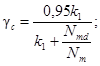 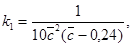
где 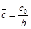
Nmd - составляющая усилий в раскосах, примыкающих к узлу, направленная вдоль оси пояса (принимается здесь со знаком «плюс»);
c0 - расстояние по полке поясного уголка от обушка до оси отверстия, на которое центрируются раскосы;
b - ширина полки поясного уголка.
Формулой (5) допускается пользоваться, если выполняются условия:
0,6 ≥ ≥ 0,4; d/b ≤ 0,27; Nmd/Nm ≤ 0,5, (6)
где d - диаметр отверстия.
4.21. Элементы, подверженные сжатию и изгибу в одной из главных плоскостей, должны проверяться на общую устойчивость как в плоскости, так и из плоскости изгиба.
В сквозных стержнях, ветви которых соединены решетками или планками, должна также проверяться устойчивость отдельных ветвей.
4.22. Расчет на общую устойчивость в плоскости изгиба должен выполняться по пп. 5.27*, 5.29 и 5.32 [1]. Для равносторонних трехгранных стержней сквозного сечения эксцентриситет рассчитывается согласно указаниям п. 15.6 [1]. При расчете стержней сквозного сечения по п. 5.27* значение эксцентриситета в случае болтовых соединений следует умножать на коэффициент 1,2 (см. п. 15.7 [1]).
При определении относительного эксцентриситета по формуле (53) [1] момент инерции сечения I принимается равным расчетному моменту инерции Id, учитывающему податливость решетки, который определяется по формуле
где A - площадь сечения стержня (суммарная площадь сечения поясов);
l - длина стержня;
μ - коэффициент расчетной длины;
λef - приведенная гибкость стержня, определяемая по формулам табл. 7 [1] с учетом указаний п. 15.5 [1].
Расчет на общую устойчивость из плоскости изгиба выполняется согласно пп. 5.30 - 5.32 [1].
При расчете приведенной гибкости составных стержней ступенчато-переменного сечения по формулам табл. 7 [1] следует руководствоваться также указаниями п. 4.14.
4.23. Проверка отдельных ветвей внецентренно сжатых сквозных стержней с решетками и планками выполняется в соответствии с указаниями п. 5.33 [1] с учетом дополнительного усилия в ветвях от изгибающего момента.
Для шарнирно опертых стоек опор на оттяжках постоянного сечения изгибающий момент и поперечная сила должны определяться по деформированной схеме по п. 15.8 [1]. При этом расчетный момент инерции Id поперечного сечения определяется по формуле (7).
Для стоек переменного сечения расчет следует выполнять по деформированной схеме по п. 4.24.
4.24. При расчете по деформированной схеме стоек, показанных на черт. 5 и 6, стойка рассматривается как стержень кусочно-постоянного сечения, состоящий из n участков. Все внешние нагрузки P(i), N(i) и M(i) приведены к границам участков (узлам).
Черт. 5. Шарнирно опертая стойка кусочно-постоянного сечения. Схема нагрузок и внутренних усилий
Черт. 6. Упруго защемленная в основании стойка кусочно-постоянного сечения. Схема нагрузок и внутренних усилий
Шарнирно опертый стержень (см. черт. 5) представляет расчетную схему стойки опоры на оттяжках, упруго защемленный в основании стержень (см. черт. 6) - расчетную схему стойки свободно стоящей опоры.
Расчет удобно выполнять методом «прогонки» в три этапа. На первых двух этапах последовательно для узлов i = 1, 2, …, n определяются изгибающие моменты M-i и M+i в сечениях ниже и выше узла i и углы поворота φi сечений i по формулам:
M-i = aiM+i-1 - biφi-1 - ci; (8)
где li - длина i-го участка, расположенного между узлами i - 1 и i;
Qri, Nri - поперечная и нормальная силы на i-м участке, определенные по недеформированной схеме;
Ii - момент инерции i-го участка;
Δfti - приращение стрелки начального искривления стойки на i-м участке;
Δφti - приращение угла поворота начального искривления на i-м участке;
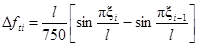
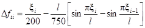
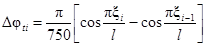
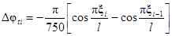
где ξi = l1 + … + li - расстояние от узла 0 до узла i, при этом ξ0 = 0.
Для стержней сквозного сечения момент инерции i-го участка Ii - принимается равным расчетному моменту инерции Idi, который определяется по формуле
где Ai - площадь сечения i-го участка стержня;
β - коэффициент, равный 1,0 при сварных и 1,2 при болтовых соединениях.
Остальные обозначения - см. п. 4.22.
Усилия Qri и Nri в формулах (12) - (14) должны приниматься с учетом знаков. Положительные направления внутренних усилий для i-го участка показаны на черт. 7.
Черт. 7. Положительные направления внутренних усилий
Формулы (8) - (10) определяют изгибающие моменты и углы поворота сечений в узле i через соответствующие величины в узле i - 1. Для того чтобы начать расчет, необходимо на первых двух этапах задаться значениями M+0(1), φ0(1), M+0(2), φ0(2) (нижний индекс в скобках обозначает номер этапа расчета).
Эти величины принимаются следующими:
схема на черт. 5: M+0(1) = M+0(2) = 0; φ0(1), φ0(2) - произвольные значения, причем φ0(1) ≠ φ0(2) (например, φ0(1) = 0, φ0(2) = 0,01 рад);
схема на черт. 6: M+0(1), M+0(2) - произвольные значения, причем M+0(1) ≠ M+0(2) (например, M+0(1) = 0, M+0(2) = 200 кН×м);
φ0(1) = M+0(1) 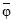
где - коэффициент податливости заделки в основании, равный углу поворота, рад, от единичного момента.
Результатом расчета на первых двух этапах являются значения моментов M+n(1) и M+n(2) для узла n соответствующие заданным параметрам в нулевом узле.
Фактические значения параметров в нулевом узле определяются по следующим формулам:
схема на черт. 5:
схема на черт. 6:
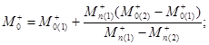 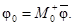
Используя значения M+0 и φ0, на третьем этапе расчета по формулам (8) - (10) определяются фактические изгибающие моменты и углы поворота по деформированной схеме.
Приращения прогибов Δfi и прогибы fi узлов определяются по формулам:
Расчеты удобно выполнять в табличной форме (см. примеры расчета 4 и 5).
4.25. Изложенная в п. 4.24 методика расчета основана на кусочно-линейной аппроксимации эпюры моментов в деформированном состоянии. Если число участков не менее пяти, такая аппроксимация практически приводит к пренебрежимо малой погрешности.
4.26. Расчет на устойчивость сплошностенчатых стержней, подверженных сжатию и изгибу в двух главных плоскостях, следует выполнять по п. 5.34 [1].
Сквозные стержни, состоящие из двух сплошностенчатых ветвей и подверженные сжатию и изгибу в обеих главных плоскостях, необходимо проверять на устойчивость по п. 5.35 [1].
4.27. При расчете стоек опор на оттяжках, состоящих из четырех ветвей, в режиме «косого ветра» ветровая нагрузка раскладывается по главным плоскостям. Изгиб в двух главных плоскостях рассматривается независимо, дополнительные усилия в ветвях от изгибающих моментов суммируются.
Изгибающие моменты в каждой из главных плоскостей должны определяться по деформированной схеме (см. п. 4.24). Начальное искривление стойки учитывается при расчете моментов только в одной из главных плоскостей, в которой изгибающий момент по недеформированной схеме максимален.
4.28. Расчет соединительных планок или решеток сквозных внецентренно сжатых (сжато-изгибаемых) стержней следует выполнять по пп. 5.9 и 5.10 [1] на большую из двух поперечных сил Q и Qfic (Q - фактическая, Qfic - условная поперечная сила, вычисляемая по п. 5.8 [1]).
Для шарнирно опертых стоек опор на оттяжках постоянного сечения фактическая поперечная сила Q, определяется в соответствии с указаниями п. 15.9 [1].
Для стоек переменного сечения фактическая поперечная сила Q на i-м участке стойки, расположенном между узлами i-1 и i (см. черт. 5 и 6), принимается равной максимальной (по абсолютной величине) из двух сил Qi и Qi-1:
Qi-1 = Qri + Nrisin φi-1, (25)
где Qri, Nri - поперечная и нормальная силы на i-м участке, определенные по недеформированной схеме;
φi - угол поворота сечения в узле i, определенный в соответствии с указаниями п. 4.24.
Примеры расчета
Пример 1 (к п. 4.19). Проверка прочности растянутого пояса при одно-болтовом креплении раскосов (черт. 8)
На черт. 8,а представлен отсек опоры ВЛ. Пояса выполнены из равнополочного уголка 110 ´ 7.
В узле 3 проверяется на прочность растянутый пояс в сечениях 1-1 и 2-2 (черт. 8,б).
Нормальные силы в смежных панелях 2-3 и 3-4: Nm = 250 кН, Nm-1 = 230 кН.
Черт. 8. К примеру расчета 1
а - схема отсека опоры; б - узел 3; 1 - точка приложения силы Nmd1; 2 - точка приложения силы Nmd2; 3 - центр тяжести сечения нетто
Составляющие усилий, передаваемых раскосами на полки поясного уголка вдоль его оси в соответствии с правилом знаков, изложенным в п. 4.19, равны:
в сечении 1-1 Nmd1 = 30 кН; Nmd2 = -10 кН;
в сечении 2-2 Nmd1 = -30 кН; Nmd2 = 10 кН.
Растягивающие усилия в сечениях 1-1 и 2-2:
N1-1 = 250 + 10 = 260 кН; N2-2 = 230 + 30 = 260 кН.
Характеристики сечения поясного уголка 110 ´ 7 брутто (по ГОСТ 8509-72): A = 15,2 см2; z0 = 2,96 см; Ix = 176 см4. Площади, занимаемые отверстиями в сечении поясного уголка: А1 = 2,16 ´ 0,7 см2 = 1,51 см2; A = 1,76 ´ 0,7 см2 = 1,23 см2. Площадь сечения нетто поясного уголка An = 15,2 - 1,51 - 1,23 = 12,46 см2. Материал поясов - сталь ВСт3сп5 по ГОСТ 380-71, Ry = 235 МПа. Расчетная температура района применения t > -40°С.
Определение напряжения в точках 1-3 сечения 1-1
Координаты центра тяжести сечения нетто относительно осей x1 и y1 (см. черт. 8,б):
x0n = Sy1/An; y0n = Sx1/An,
где Sy1, Sx1 - статические моменты площади нетто относительно осей y1 и x1, которые соответственно равны:
Sy1 = Az0 - A1c01 - A2δ/2 = 15,2×2,96 - 1,51×6 - 1,23×0,35 = 35,50 см3;
Sx1 = Az0 - A1δ/2 - A2c02 = 15,2×2,96 - 1,51×0,35 - 1,23×6 = 37,08 см3;
x0n = 35,5/12,46 = 2,85 см; y0n = 37,08/12,46 = 2,98 см.
Определим значение моментов инерции ослабленного сечения Ixn, Iyn, Ixn,yn относительно центральных осей xn и yn. Пренебрегая моментами инерции отверстий относительно их собственных центральных осей, получим:
Ixn = Ix + A(y0n - z0)2 - A1(y0n - δ/2)2 - A2(c02 - y0n)2 = 176 + 15,2(2,98 - 2,96)2 - 1,51(2,98 - 0,35)2 - 1,23(6 - 2,98)2 = 154,34 см4;
Iyn = Iy + A(z0 - x0n)2 - A1(c01 - x0n)2 - A2(x0n - δ/2)2 = 176 + 15,2(2,96 - 2,85)2 - 1,51(6 - 2,85)2 - 1,23(2,85 - 0,35)2 = 153,51 см4,
где Ix, Iy - моменты инерции сечения брутто уголка относительно его центральных осей x-x и y-y (для равно полочного уголка Ix = Iy).
Координаты центра тяжести сечения нетто уголка относительно осей x2 и y2:
b = +(x0n - δ/2) = 2,85 - 0,7/2 = 2,50 см;
a = +(y0n - δ/2) = 2,98 - 0,7/2 = 2,63 см.
По формуле (3) Ixn,yn = -2,50×2,63×12,46 = -81,92 см4.
Доля изгибающего момента, воспринимаемого в узле 3 панелью 3-4, полученная из расчета пояса как двухпролетной неразрезной балки при постоянном моменте инерции (см. черт. 4), составляет
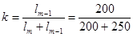
Эксцентриситеты приложения силы Nmd1:
ex1 = -(y0n - δ/2) = -(2,98 - 0,35) = -2,63 см;
ey1 = (c01 - x0n) = (6 - 2,85) = 3,15 см.
Эксцентриситеты приложения силы Nmd2:
ex2 = (c02 - y0n) = (6 - 2,98) = 3,02 см;
ey2 = -(x0n - δ/2) = -(2,85 - 0,35) = -2,5 см.
Подставляя значения Nmd1, Nmd2, k, ex1, ey1, ex2, ey2 в формулу (2), получим:
Mxn = 0,444[30(-2,63) + (-10)3,02] = -48,44 кН×см;
Myn = 0,444[30×3,15 + (-10)(-2,5)] = 53,06 кН×см.
Координаты точек 1-3 сечения поясного уголка в осях xn и yn:
x1 = 11 - 2,85 = 8,15 см; y1 = -2,98 см;
x2 = -2,85 см; y2 = 11 - 2,98 = 8,02 см;
x3 = -2,85 см; y3 = -2,98 см.
Напряжения в точках 1-3 сечения 1-1 определим по формуле (1):
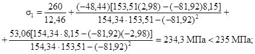
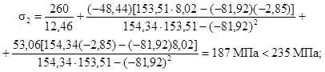
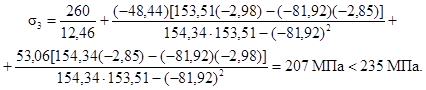
Определение напряжения в точке 2 сечения 2-2
Доля момента, воспринимаемая в узле 3 панелью 3-2:
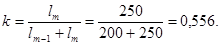
В сечении 2-2 величины x0n, y0n, Ixn, Iyn, Ixn,yn, ex1, ey1, ex2, ey2, x2, y2 имеют те же значения как по величине, так и по знаку, что и в сечении 1-1.
Значения Nmdi для панели 3-2 в соответствии с правилом знаков, принятым в п. 4.19:
Nmd1 = -30 кН; Nmd2 = 10 кН.
Изгибающие моменты в сечении 2-2 панели 3-2:
Mxn = 0,556[-30(-2,63) + 10×3,02] = 60,62 кН×см;
Myn = 0,556[(-30)3,15 + 10(-2,5)] = -66,39 кН×см.
Напряжение в точке 2 сечения 2-2, определяемое по формуле (1):
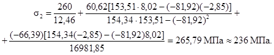
Необходимо усиление.
Пример 2 (к п. 4.19). Проверка растянутого пояса на прочность в сечении 1-1 панели 3-4 примера 1 в случае крепления одного из раскосов двумя болтами в соответствии с черт. 9,а
Характеристики сечения нетто:
по сечению 1-1 (черт. 9,б): An = 15,2 - 1,56×0,7 - 1,76×0,7 = 12,88 см2;
по сечению 1-2 (по «зигзагу»): An = 15,2 + (5,7 - 3,5)0,7 - 1,76×0,7 - 1,56×0,7×2 = 13,18 см2;
по сечению 2-2: An = 15,2 - 1,56×0,7 = 14,11 см2.
Площади, занимаемые отверстиями в сечении: A1 = 1,09 см2; A2 = 1,23 см2.
Черт. 9. К примеру расчета 2
а - схема крепления раскосов: 1 - точка приложения силы Nmd1; 2 - точка приложения силы Nmd2; 3 - центр тяжести сечения; б - схема расчетных сечений пояса
Определение напряжений в точке 1 сечения 1-1
Координаты центра тяжести сечения нетто относительно осей x1 и y1:
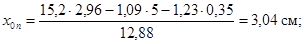
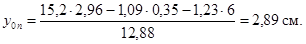
Моменты инерции сечения нетто:
Ixn = 176 + 15,2(2,89 - 2,96)2 - 1,09(2,89 - 0,35)2 - 1,23(6 - 2,89)2 = 157,13 см4;
Iyn = 176 + 15,2(3,04 - 2,96)2 - 1,09(5 - 3,04)2 - 1,23(3,04 - 0,35)2 = 163 см4.
Координаты центра тяжести сечения нетто поясного уголка относительно осей x2 и y2: a = 2,89 - 0,35 = 2,54 см; b = 3,04 - 0,35 = 2,69 см.
Центробежный момент инерции: Ixn,yn = -2,54×2,69×12,88 = -88 см4.
Эксцентриситеты приложения сил Nmd1 и Nmd2 относительно осей xn и yn:
ex1 = -2,54 см; ey1 = 5 - 3,04 = 1,96 см;
ex2 = 6 - 2,89 = 3,11 см; ey2 = 2,69 см.
Изгибающие моменты:
Mxn = 0,444[30(-2,54) + (-10)3,11] = -47,64 кН×см;
Myn = 0,444[30×1,96 + (-10)(-2,69)] = 38,05 кН×см.
Координаты точки 1 в осях xn и yn: x1 = 11 - 3,04 = 7,96 см; y1 = - 2,89 см.
Напряжение в точке 1 по формуле (1):
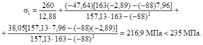
Определение напряжения в точке 1 сечения 2-2
В сечении 2-2 имеется одно болтовое отверстие. Координаты центра тяжести сечения нетто относительно осей x1 и y1:
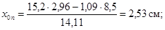
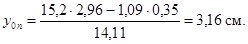
Моменты инерции:
Ixn = 176 + 15,2(3,16 - 2,96)2 - 1,09(3,16 - 0,35)2 = 168 см4;
Iyn = 176 + 15,2(2,96 - 2,53)2 - 1,09(8,5 - 2,53)2 = 140 см4.
Координаты центра тяжести сечения нетто относительно осей x2 и y2: a = 3,16 - 0,35 = 2,81 см; b = 2,53 - 0,35 = 2,18 см.
Ixn,yn = -2,81×2,18×14,11 = -86,44 см4.
Значения изгибающих моментов в сечении 2-2 те же, что и в сечении 1-1: Mxn = -47,64 кН×см; Myn = 38,05 кН×см.
Координаты точки 1 в осях xn и yn: x1 = 11 - 2,53 = 8,47 см; y1 = -3,16 см.
Напряжение в точке 1 по формуле (1):
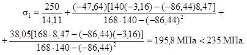
Так как площадь сечения An по «зигзагу» больше, чем по сечению 1-1, проверка по сечению 1-1 не требуется. Аналогично проверяются сжатые пояса и другие элементы.
Пример 3 (к п. 4.20). Расчет на прочность пояса по формуле (4)
Проверим на прочность растянутый поясной уголок 110 ´ 7 в узле 1 по сечению 1-1 (черт. 10). Уголок из стали марки ВСт3сп5 по ГОСТ 380-71.
Черт. 10. К примеру расчета 3
а - схема отсека опоры; б - схема усилий в узле 1
Сечение пояса постоянно по длине.
Усилия в панели ниже узла 1: Nm = 250 кН; Nmd = 50 кН.
Характеристики сечения поясного уголка: A = 15,2 см2; d0 = 2,16 см; An = 15,2 - 2,16×0,7 = 13,69 см2.
Расстояние по полке от обушка до центра отверстия c0 = 5,5 см;
= 5,5/11 = 0,5.
Проверим выполнение условия (6): 0,6 ≥ 0,5 > 0,4; d0/b = 2,16/11 = 0,196 < 0,27; Nmd/N = 50/250 = 0,2 < 0,5.
Условие выполняется, поэтому проверка прочности по формуле (4) допустима.
По формулам (5) находим:
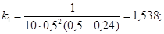 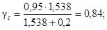
σ = 250/13,69 = 18,26 кН/см2 = 182,6 МПа < 235×0,84 = 197 МПа.
Пример 4 (к п. 4.24). Статический расчет по деформированной схеме шарнирно опертой стойки (см. черт. 5)
Рассматривается стойка сквозного сечения с параллельными поясами и треугольной решеткой. Длина стойки, состоящей из пяти секций, составляет 48 м. Расстояние между осями поясов b = 1,54 м (сечение квадратное).
При статическом расчете рассматриваем стойку как стержень кусочно-постоянной жесткости, состоящий из пяти участков, границы которых совпадают с границами секций.
Исходные данные к расчету моментов инерции участков: длина панелей lm, длина раскосов ld, сечения поясов и раскосов приведены в табл. 7.
Моменты инерции участков Ii определяются по формуле (19). Например, для 3-го участка(i = 3):
A3 = 4×19,7 = 78,8 см2;
по формулам табл. 7[1]:
α1 = α2 = 10×2393/(1542×182) = 31,6; Ad1 = Ad2 = 2×3,48 = 6,96 см2;
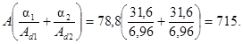
Таблица 7
|
lm, см |
ld, см |
Уголок пояса |
Уголок раскоса |
Площадь сечения пояса, см2 |
Площадь сечения раскоса, см2 |
|
|
1 |
175 |
233 |
110 ´ 8 |
45 ´ 4 |
17,2 |
3,48 |
|
2 |
182 |
239 |
125 ´ 8 |
45 ´ 4 |
19,7 |
3,48 |
|
3 |
182 |
239 |
125 ´ 8 |
45 ´ 4 |
19,7 |
3,48 |
|
4 |
182 |
239 |
125 ´ 8 |
45 ´ 4 |
19,7 |
3,48 |
|
5 |
200 |
252 |
125 ´ 8 |
50 ´ 5 |
19,7 |
4,80 |
Для остальных участков стойки значения величины 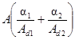
По формуле (21) [1] и в соответствии с указаниями п. 4.14
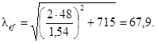
Момент инерции 3-го участка
I3 = 78,8×10-4×482/(1,2×67,92) = 3,28×10-3 м4.
Жесткость при изгибе
EI3 = 2,1×108×3,28×10-3 = 6,89×103 кПа×м4.
Жесткости при изгибе для всех участков стойки приведены в табл. 8. В этой же таблице приведены остальные исходные данные к расчету стойки по деформированной схеме: длина участков li, значения нормальных Nri и поперечных Qri сил, определенных по недеформированной схеме.
В гр. 6 приведены значения приращений стрелки начального искривления стойки, найденные по формуле (15), в гр. 7 - 9 - значения параметров ai, bi и ci, определенные по формулам (11) - (13).
В гр. 2 табл. 9 приведены заданные внешние узловые моменты, в гр. 3 - значения приращений угла поворота начального искривления, определенные по формуле (17); остальные графы содержат результаты расчета по этапам.
На этапе I было принято M+0(1) = 0, φ0(1) = 0; на этапе II - M+0(2) = 0, φ0(1) = 0,01 рад (первая строка гр. 4 - 7).
Значения моментов и углов поворота, найденные рекуррентно по формулам (8) - (10), приведены в гр. 4 - 7.
На этапе III принято M+0 = 0, а значение φ0 найдено по формуле (20), в которой значения M+n(1) = M+5(1) и M+n(2) = M+5(2) взяты из последней строки гр. 4 и 6 табл. 9:
φ0 = 0 + 446,06(0,01 - 0)/(446,06 - 184,52) = 0,017055 рад.
Дальнейшие вычисления в гр. 8 - 10 выполнены по формулам (8) - (10).
Приращения прогибов и прогибы (гр. 11 и 12) вычислены по формулам (22) и (23).
Таблица 8
|
li, м |
EIi×10-3, кПа×м4 |
Nri, кН |
Qri, кН |
Δfti×102, м |
ai |
bi, кН×м |
ci, кН×м |
|
|
1 |
2 |
3 |
4 |
5 |
6 |
7 |
8 |
9 |
|
1 |
7,0 |
603 |
1100 |
25,30 |
2,84 |
0,93596 |
7587,0 |
205,28 |
|
2 |
11,0 |
689 |
1110 |
10,50 |
3,08 |
0,90560 |
11826 |
144,98 |
|
3 |
11,0 |
689 |
1120 |
-7,30 |
0,14 |
0,90478 |
11928 |
-76,233 |
|
4 |
11,0 |
689 |
1130 |
-24,70 |
-2,86 |
0,90395 |
12032 |
-294,28 |
|
5 |
8,0 |
689 |
1140 |
-51,10 |
-3,20 |
0,94797 |
8961,8 |
-437,56 |
Таблица 9
|
M(i), кН×м |
Δφti×102, рад |
Этап I |
Этап II |
Этап III |
|||||||
|
M+i(1), кН×м |
φi(1)×102, рад |
M+i(2), кН×м |
φi(2)×102, рад |
M-i, кН×м |
M+i, кН×м |
φi×102, рад |
Δfi×102, м |
fi×102, м |
|||
|
1 |
2 |
3 |
4 |
5 |
6 |
7 |
8 |
9 |
10 |
11 |
12 |
|
0 |
0 |
- |
0 |
0 |
0 |
1,0 |
0 |
0 |
1,7055 |
- |
0 |
|
1 |
0 |
-0,0431 |
-205,28 |
-0,16225 |
-281,15 |
0,79371 |
-334,68 |
-334,68 |
1,4681 |
14,325 |
14,325 |
|
2 |
0 |
-0,215 |
-311,69 |
-0,78993 |
-493,45 |
-0,039622 |
-621,68 |
-621,68 |
0,48972 |
15,451 |
29,776 |
|
3 |
0 |
-0,295 |
-111,55 |
-1,4228 |
-365,50 |
-1,0203 |
-544,67 |
-544,67 |
-0,73633 |
0,29346 |
30,069 |
|
4 |
0 |
-0,228 |
364,64 |
-1,4487 |
86,648 |
-1,4709 |
-109,47 |
-109,47 |
-1,4865 |
-14,468 |
15,601 |
|
5 |
467 |
-0,057 |
446,06 |
-0,76397 |
184,52 |
-1,0993 |
467,00 |
0,003 |
-1,3359 |
-14,708 |
0,893 |
Прогиб в верхнем шарнире f5 = 0,893 см определен по расчету отличным от нуля и составляет 3 % максимального прогиба. Эта практически допустимая невязка объясняется тем, что при расчете стойка рассматривалась как стержень, состоящий из сравнительно небольшого числа участков (пяти), в пределах каждого из них эпюра моментов предполагалась линейной (см. п. 4.25). Невязку, если необходимо, можно уменьшить, увеличивая число расчетных участков (например, разбив каждый участок постоянной жесткости на два).
Максимальные усилия в поясе U и раскосе D на i-м участке определяются следующим образом:
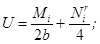 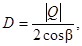
где Mi - максимальный из двух моментов: |M-i| и |M+i-1|;
β - угол наклона раскоса на i-м участке (в примере β = 0,644).
Например, для 3-го участка рассматриваемой стойки M+2 = -621,68 кН×м; M-3 = -544,67 кН×м; Nr3 = 1120 кН.
Усилие в поясе U = 621,68/(2×1,54) + 1120/4 = 481,8 кН.
Q3 = -7,3 + 1120sin(-0,0073633) = -15,5 кН;
Q2 = -7,3 + 1120sin(0,0048972) = -1,82 кН.
Усилие в раскосе D = 15,5/(2×0,644) = 12 кН.
Проверка прочности и устойчивости поясов и раскосов выполняется в соответствии с указаниями [1].
Пример 5 (к п. 4.24). Статический расчет по деформированной схеме стойки, упруго защемленной в основании (см. черт. 6)
Расчет сведен в табл. 10 и 11, структура которых аналогична структуре табл. 8 и 9 из примера 4.
Гр. 2 - 5 табл. 10 содержат исходные данные: длину и жесткость участков, значения нормальных и поперечных сил, определенных по недеформированной схеме.
В гр. 6 приведены значения приращений стрелки начального искривления стойки, найденные по формуле (16), в гр. 7 - 9 - значения параметров ai, bi и ci, определенные по формулам (11) - (13).
В гр. 2 табл. 11 приведены заданные внешние узловые моменты, в гр. 3 - приращения угла поворота начального искривления стойки, определенные по формуле (18); остальные графы содержат результаты расчета по этапам.
Таблица 10
|
li, м |
EIi×10-3, кПа×м4 |
Nri, кН |
Qri, кН |
Δfti×102, м |
ai |
bi, кН×м |
ci, кН×м |
|
|
1 |
2 |
3 |
4 |
5 |
6 |
7 |
8 |
9 |
|
1 |
4,5000 |
185,00 |
53,90 |
31,62 |
0,45654 |
0,99705 |
242,31 |
142,40 |
|
2 |
4,5000 |
138,00 |
46,40 |
29,39 |
0,97384 |
0,99660 |
208,56 |
132,56 |
|
3 |
4,8000 |
99,70 |
40,40 |
27,28 |
2,0191 |
0,99534 |
193,62 |
131,56 |
|
4 |
4,7000 |
52,80 |
35,90 |
25,18 |
3,0718 |
0,99251 |
168,31 |
119,15 |
|
5 |
5,5000 |
14,70 |
13,90 |
12,33 |
4,6493 |
0,98577 |
76,087 |
68,136 |
|
6 |
2,0000 |
8,82 |
3,25 |
3,83 |
1,8297 |
0,99926 |
6,4984 |
7,7176 |
Таблица 11
|
M(i), кН×м |
Δφti×102, рад |
Этап I |
Этап II |
Этап III |
||||||
|
M+i(1), кН×м |
M+i(1), кН×м |
M+i(2), кН×м |
φi(2)×102, рад |
M+i, кН×м |
φi×102, рад |
Δfi×102, м |
fi, м |
|||
|
1 |
2 |
3 |
4 |
5 |
6 |
7 |
8 |
9 |
10 |
11 |
|
0 |
0 |
- |
0 |
0 |
200,00 |
1,0000 |
711,29 |
3,5565 |
- |
0 |
|
1 |
0 |
0,06041 |
-142,40 |
-0,11277 |
54,591 |
1,3701 |
558,18 |
5,1609 |
20,074 |
0,20074 |
|
2 |
0 |
0,16381 |
-274,24 |
-0,62826 |
-81,008 |
1,4908 |
412,96 |
6,9081 |
27,938 |
0,48012 |
|
3 |
0 |
0,23509 |
-403,30 |
-2,0242 |
-21,507 |
1,0132 |
266,11 |
8,7778 |
39,384 |
0,87396 |
|
4 |
17,30 |
0,21790 |
-533,32 |
-5,8980 |
-35,162 |
-1,2142 |
112,89 |
10,760 |
48,946 |
1,3634 |
|
5 |
24,22 |
0,25833 |
-613,60 |
-26,643 |
-43,804 |
-15,275 |
10,739 |
13,784 |
72,769 |
2,0911 |
|
6 |
2,11 |
0,01217 |
-621,24 |
-40,607 |
-44,656 |
-25,269 |
0,0078413 |
13,942 |
29,575 |
2,3869 |
При расчетах принят коэффициент податливости заделки :
= 5×10-5 рад/(кН×м).
На этапе I задаемся M+0(1) = 0, φ0(1) = M+0(1) = 0; на этапе II - M+0(2) = 200 кН×м, отсюда φ0(2) = 200×5×10-5 = 0,01 рад (первая строка гр. 4 - 7). Остальные строки гр. 4 - 7 содержат значения моментов и углов поворота, которые определяются рекуррентно по формулам (8) - (10).
На этапе III момент M+0 определен по первой из формул (21), в которой значения M+n(1) = M+6(1) и M+n(2) = M+6(2) взяты из последней строки гр. 4 и 6 табл. 11:
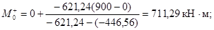
угол поворота φ0 = 711,29×5×10-5 = 0,035565 рад.
Дальнейшие вычисления в гр. 8 и 9 выполнены по формулам (8) - (10).
Приращения прогибов и прогибы (гр. 10 и 11) вычислены по формулам (22) и (23).
Проверка прочности и местной устойчивости стойки приведена в примере 9.
4.29. В панелях со стыками необходимо проверить:
устойчивость пояса при сжатии;
прочность пояса при сжатии;
прочность стыковых накладок (если стык выполняется на накладках).
Сжатый пояс из одиночного уголка с телескопическим стыком или со стыком, осуществляемым на уголковых накладках, следует рассчитывать как внецентренно сжатый элемент по формуле (51) [1]:
(26)
где φe - коэффициент, определяемый по табл. 74 [1] в зависимости от условной гибкости и приведенного эксцентриситета mef = ηm, при этом коэффициент влияния формы сечения η принимается равным 1,0. Значения φe следует принимать не более 0,95φ для болтовых стыков с односторонними накладками и не более φ для всех остальных видов стыков (φ - коэффициент, определяемый по п. 5.3 [1]); γc = 1,0.
Площадь поперечного сечения пояса брутто A, усилие N, гибкость λ и относительный эксцентриситет m следует определять в зависимости от типа стыка в соответствии с рекомендациями пп. 4.30 - 4.32.
4.30. При решетке с совмещенными в смежных гранях узлами и стыке в пределах панели (телескопическом или с уголковой накладкой) расчет пояса следует выполнять в соответствии с расчетной схемой (черт. 11). Распределение моментов от внецентренного сжатия между уголками, примыкающими к стыку, допускается принимать как в трехпролетной неразрезной балке.
По формуле (26) необходимо проверить каждый из примыкающих к стыку уголков на расчетное усилие в панели N. Относительные эксцентриситеты должны определяться по формулам:
m = m1 = e0kA(1)x1/I(1)min; (27)
m = m2 = e0(1 - k)A(2)x2/I(2)min. (28)
Черт. 11. Расчетная схема панели пояса со стыком при решетке с совмещенными в смежных гранях узлами
1, 2 - уголки
e0 - расстояние между центрами тяжести стыкуемых уголков (черт. 12, где для примера показан телескопический стык);
k - доля момента от эксцентриситета нормальной силы в стыке, воспринимаемая уголком 1 (см. черт. 11);
A(1), A(2) - площади сечений брутто уголков 1 и 2;
x1, x2 - расстояния от осей y01-y01 и y02-y02 до наиболее сжатого волокна уголков 1 и 2;
I(1)min, I(2)min - соответствующие минимальные моменты инерции.
Если стыкуемые уголки различного сечения, то индексом 1 отмечается уголок большего сечения.
Черт. 12. Сечение телескопического стыка
1, 2 - поясные уголки; 3, 4 - центры тяжести уголков
Коэффициент k следует определять по формуле
(29)
(30)
где lm1, lm2 - соответственно длина уголков 1 и 2 в пределах длины lm панели;
lm+1, lm-1 - соответственно длина панелей, примыкающих к панели длиной lm, в которой стыкуется поясной уголок.
Гибкость уголков следует определять по формуле
где lef = μlm - расчетная длина уголка;
i - минимальный радиус инерции соответствующего уголка.
Коэффициент расчетной длины μ = μ1 для уголка 1 следует определять по графикам черт. 13 в зависимости от отношений I(2)min/I(1)min и lm2/lm. Для уголка 2 коэффициент расчетной длины равен:
Черт. 13. К определению расчетных длин участков двухступенчатого стержня
а - расчетная схема; б - коэффициент расчетной длины μ1 = lef/l участка 1
Площадь сечения A в формуле (26) следует принимать равной A(1) или A(2) соответственно для уголков 1 и 2.
Если стык осуществляется на одной уголковой накладке, прочность ее должна проверяться по формуле
(33)
где Np = N;
Anp - площадь сечения накладки нетто;
Ipmin - минимальный момент инерции уголка накладки брутто;
x - расстояние от оси y0-y0 накладки до волокна, в котором определяются напряжения (до пера берется со знаком «минус», до обушка - со знаком «плюс»);
γc = 1,1 - коэффициент условий работы;
Mp - изгибающий момент в накладке, равный:
где e1 - расстояние от оси накладки до оси уголка 1.
В формуле (34) знак «плюс» следует принимать, если ось уголка 1 и его обушок расположены с одной стороны от оси накладки, знак «минус» - если ось накладки расположена между осью уголка 1 и его обушком.
Сжимающая сила и напряжения сжатия в формулах (33) и (34) считаются положительными.
Если стык выполняется на двух уголковых накладках, прочность их проверяется по формуле (33), в которой учитываются только первое слагаемое и Apn - суммарная площадь нетто двух накладок.
Болтовой стык проверяется на прочность при сжатии по формулам:
(35)
(36)
где M1 = Nke0; M2 = -N(1 - k)e0; γc = 1,05; (37)
x1 - расстояние от оси y01-y01 уголка 1 до волокна, в котором определяются напряжения;
x2 - то же, уголка 2.
Правило знаков принято такое же, как при расчете стыковой накладки.
4.31. Расчетная схема панели пояса со стыком (телескопическим или с накладкой) при решетке со смещенными в смежных гранях узлами приведена на черт. 14.
По формуле (26) следует проверять каждый из стыкуемых уголков на усилие в полупанели, содержащей стык. Устойчивость необходимо проверять как в плоскости грани В, так и в плоскости грани А, в панелях которых длиной l(B)m и l(A)m расположен стык.
Относительные эксцентриситеты уголков при проверке в плоскости любой из граней В и А определяются по формулам (27) и (28), в которых коэффициент k следует принимать равным:
(38)
Здесь коэффициенты kb и ka определяются по формулам (29) и (30), в которых следует: минимальные моменты инерции уголков I(1)min, I(2)min заменить моментами инерции I(1)x, I(2)x относительно осей, параллельных полкам; длины элементов lm, lm-1, lm+1, lm1, lm2 принять равными l(B)m, l(B)m-1, l(B)m+1, l(B)m1, l(B)m2 или l(А)m, l(А)m-1, l(А)m+1, l(А)m1, l(А)m2 при расчете коэффициентов kb и ka соответственно.
Гибкость уголков определяется по формуле (31), в которой i = ix. При проверке устойчивости в плоскости грани В расчетная длина определяется по формуле lef = μl(B)m, в которой коэффициент расчетной длины μ уголка 1 равен:
где μ1 - следует определять по графикам черт. 13 в зависимости от отношений I(2)x/I(1)x и l(B)m2/l(B)m.
Черт. 14. Расчетная схема панелей пояса со стыком при решетке со смещенными в смежных гранях узлами
1, 2 - уголки
Для уголка 2 коэффициент расчетной длины μ равен:
Площадь сечения A в формуле (26) принимается равной A(1) или A(2) соответственно для уголков 1 и 2.
Аналогично следует выполнять расчет в плоскости грани A.
Если стык выполняется на уголковой накладке, прочность ее должна проверяться по формуле (33), в которой усилие в накладке равно усилию в полупанели, содержащей стык, а изгибающий момент вычисляется по формуле (34), где k определяется по формуле (38).
Проверка прочности стыкуемых уголков должна выполняться по формулам (35) - (37).
4.32. При расположении стыка пояса в узле решетки с совмещенными в смежных гранях узлами (черт. 15) следует рассчитывать каждую из примыкающих к стыку панелей пояса как внецентренно сжатый элемент по формуле (26) соответственно на усилия N1 и N2.
Распределение моментов от внецентренного сжатия между уголками, примыкающими к стыку, можно принимать как в двухпролетной неразрезной балке.
Черт. 15. Расчетная схема панелей пояса при стыке в узле решетки с совмещенными в смежных гранях узлами
1, 2 - уголки
Относительные эксцентриситеты усилий в панелях определяются по формулам:
(41)
(42)
k(1) = I(1)min/l1, k(2) = I(2)min/l2; (43)
l1, l2 - геометрическая длина панелей, примыкающих к стыку.
Остальные обозначения - см. п. 4.30.
Гибкость каждого из уголков определяется по формуле (31), в которой i = imin, а расчетная длина lef равна геометрической.
Расчет уголковой накладки необходимо выполнять на большее из усилий в стыкуемых уголках в соответствии с рекомендациями п. 4.30.
Прочность примыкающих к стыку уголков проверяется по формулам (35) - (37). При этом в формуле (35) следует принять N = N1, в формуле (36) - N = N2, в выражениях (37) значение k определяется по формуле
(44)
Примеры расчета
Пример 6 (к пп. 4.29 и 4.30). Расчет панели пояса с телескопическим стыком при решетке с совмещенными в смежных гранях узлами.
Стык сварной. Расчетное усилие в панели N = 160 кН. Длина панели пояса lm = 120 см; длина большего из стыкуемых уголков lm1 = 90 см, длина меньшего из стыкуемых уголков lm2 = 30 см; длины примыкающих панелей: lm-1 = lm+1 = 120 см.
Стыкуемые уголки: Ð 90 ´ 8 и Ð 80 ´ 8. Материал - сталь марки ВСт3пс6 по ГОСТ 380-71, Ry = 235 МПа.
Характеристики уголков:
Ð 90 ´ 8: A(1) = 13,9 см2; I(1)min = 43,8 см4; i(1)min = 1,77 см; z(1)0 = 2,51 см;
Ð 80 ´ 8: A(2) = 12,3 см2; I(2)min = 30,3 см2; i(2)min = 1,57 см; z(2)0 = 2,27 см.
Расстояние между центрами тяжести стыкуемых уголков
e0 = (d(1) + z(2)0 - z(1)0)1,41 = (0,8 + 2,27 - 2,51)1,41 = 0,79 см.
Расстояния от оси y0-y0 до наиболее сжатого волокна:
уголок 1 - сжато перо: x1 = b(1)×0,707 - z(1)0×1,41 = 9×0,707 - 2,51×1,41 = 2,82 см;
уголок 2 - сжат обушок: x2 = z(2)0×1,41 = 2,27×1,41 = 3,20 см.
Коэффициент расчетной длины μ1 = 1,01 для большего из стыкуемых уголков определен по графику черт. 13 в зависимости от параметров
= 30,3/43,8 = 0,83 и lm2/lm = 30/120 = 0,25
Коэффициент расчетной длины для меньшего уголка по формуле (32): μ2 = 1,01×0,83 = 0,838.
Гибкости уголков по формуле (31):
λ(1) = μ1lm/i(1)min = 1,01×120/1,77 = 68,5; λ(2) = μ2lm/i(2)min = 0,838×120/1,57 = 64,1
Параметры, необходимые для вычисления коэффициента k, определяются по формулам (30):
χ1 = 90/43,8 = 2,05 см-3; χ2 = 30/30,3 = 0,990 см-3;
θ1 = 120/(3×43,8) = 0,913 см-3; θ2 = 120/(3×30,3) = 1,320 см-3;
δ11 = 2,05 + 0,990 + 0,913 + 1,320 = 5,273 см-3;
δ12 = 30(0,990/2 + 1,320) - 90(2,05/2 + 0,913) = -119,97 см-2;
δ22 = 902(2,05/3 + 0,913) + 302(0,990/3 + 1,320) = 14415 см-1;
δ1p = 0,990 + 1,320 = 2,310 см-3; δ2p = 30(0,990/2 + 1,320) = 54,45 см-2.
Коэффициент распределения момента в стыке определяется по формуле (29):
Относительные эксцентриситеты по формулам (27) и (28):
m1 = 0,79×0,646×13,9×2,82/43,8 = 0,457;
m2 = 0,79(1 - 0,646)×12,3×3,20/30,3 = 0,363
Проверка устойчивости большего уголка 1
= 68,5×0,0338 = 2,32; mef = 0,457.
По табл. 74 [1] φe = 0,626. Определим значение φ по п. 5.3 [1]:
φ = 1 - (0,073 - 5,53×235/(2,06×105))2,32 = 0,764.
φe = 0,626 < 0,764 = φ.
Проверим уголок по формуле (26):
σ = 160/(0,626×13,9×10-4) = 1,84×105 кН/м2 = 184 МПа < 235 МПа.
Проверка устойчивости уголка 2
= 64,1×0,0338 = 2,17; mef = 0,363; φe = 0,679;
φ = 1 - (0,073 - 5,53×235/(2,06×105))×2,17 = 0,787;
φe = 0,679 < 0,787 = φ;
σ = 160/(0,679×12,3×10-4) = 1,92×105 кН/м2 = 192 МПа < 235 МПа.
Пример 7 (к пп. 4.29 и 4.31). Расчет панели пояса со стыком на уголковой накладке при решетке с несовмещенными узлами
Стык болтовой. Расчетные усилия: N1 = N2 = 160 кН; Nmd = 0.
Длина панели пояса l(B)m = 165 см, стык в середине нижней полупанели грани B (см. черт. 14). Стыкуемые уголки: Ð 90 ´ 8 и Ð 80 ´ 8. Материал - сталь ВСт3пс6 по ГОСТ 380-71*.
Характеристики уголков:
A(1) = 13,9 см2; I(1)x = 106 см4; I(1)min = 43,8 см4; z(1)0 = 2,51 см;
i(1) = i(1)x = 2,76 см;
A(2) = 12,3 см2; I(2)x = 74,3 см4; I(2)min = 30,3 см4; z(2)0 = 2,27 см;
i(2) = i(2)x = 2,44 см.
Расстояние между центрами тяжести стыкуемых уголков: e0 = (z(1)0 - z(2)0)1,41 = 0,34 см.
Геометрическая длина стыкуемых уголков (см. черт. 14):
в грани B: l(B)m1 = 0,25×165 = 41,3 см; l(B)m2 = 165 - 41,3 = 123,7 см;
в грани A: l(A)m1 = 123,7 см; l(A)m2 = 41,3 см.
Длина элементов: l(A)m-1 = l(B)m-1 = l(A)m+1 = l(B)m+1= 165 см.
Расчет коэффициента kB (в плоскости грани В)
По формулам (30) с учетом пояснений к формуле (38):
χ1 = 41,3/106 = 0,390 см-3; χ2 = 123,7/74,3 = 1,665 см-3;
θ1 = 165/(3×106) = 0,519 см-3; θ2 = 165/(3×74,3) = 0,740 см-3;
δ11 = 0,390 + 1,665 + 0,519 + 0,740 = 3,314 см-3;
δ12 = 123,7(1,665/2 + 0,740) - 41,3(0,390/2 + 0,519) = 165 см-2;
δ22 = 41,32(0,360 + 0,519) + 123,72(1,665/3 + 0,740) = 20923 см-1;
δ1p = 1,665 + 0,740 = 2,405 см-3; δ2p = 123(1,665/2 + 0,740) = 194,52.
По формуле (29) kB = (2,105×20923 - 194,52×165)/(3,314×20923 - 1652) = 0,433.
Расчет коэффициента kA (в плоскости грани А)
χ1 = 123,7/106 = 1,167 см-3; χ2 = 41,3/74,3 = 0,556 см-3;
θ1 = 165/(3×106) = 0,519 см-3; θ2 = 165/(3×74,3) = 0,740 см-3;
δ11 = 1,167 + 0,556 + 0,519 + 0,740 = 3,314 см-3;
δ12 = 41,3(0,556/2 + 0,740) - 123,7(1,167/2 + 0,519) = -94,34 см-2;
δ22 = 123,72(1,167 + 0,519) + 41,32(0,556/3 + 0,740) = 15472 см-1;
δ1p = 0,556 + 0,740 = 1,296 см-3; δ2p = 41,3(0,556/2 + 0,740) = 42,04 см-2.
По формуле (29) kA = 1,296×15472 - 42,04(-94,34)/(2,982 ×15472 - 94,342) = 0,645.
По формуле (38)
Проверка устойчивости в плоскости грани B
Расстояние от оси y0-y0 до наиболее сжатого волокна:
уголок 1 - наиболее сжат обушок: x1 = 1,41z(1)0 = 1,41×2,51 = 3,54 см;
уголок 2 - наиболее сжато перо: x2 = 0,707×8 - 1,414×2,27 = 2,45 см.
Относительные эксцентриситеты по формулам (27) и (28):
m1 = 0,34×0,55×13,9×3,54/43,8 = 0,210; m2 = 0,34(1 - 0,55)12,3×2,45/30,3 = 0,152;
По графику черт. 13 определим μ1 = 1,21.
μ = 1,14μ1 = 1,14×1,21 = 1,38; μ2 = 1,38×0,837 = 1,15.
Гибкости уголков: λ(1) = 1,38×165/2,76 = 82,5; λ(2) = 1,15×165/2,44 = 77.8.
Проверка устойчивости уголка 1
= 82,5×0,0338 = 2,79; mef = 0,210.
По табл. 74 [1] φe = 0,647.
По п. 5.3 [1]:
φ = 1,47 - 13×235/(2,06×105) - (0,371 - 27,3×235/(2,06×105))2,79 + (0,0275 - 5,53×235/(2,06×105))2,792 = 0,672;
φe = 0,647 > 0,638 = 0,95φ.
По формуле (26) σ = 160/(0,638×13,9×10-4) = 1,80×105 кН/м2 = 180 МПа < 235 МПа.
Проверка устойчивости уголка 2
= 77,8×0,0338 = 2,63; mef = 0,152; φe = 0,698;
φ = 1,47 - 13×235/(2,06×105) - (0,371 - 27,3×235/(2,06×105))2,63 + (0,0275 - 5,53×235/(2,06×105))2,632 = 0,708;
φe = 0,698 > 0,673 = 0,95φ;
σ = 160/(0,673×12,3×10-4) = 1,93×105 кН/м2 = 193 МПа < 235 МПа.
Расчет в плоскости грани A
Уголок 1 - наиболее сжат обушок: x1 = 3,54 см; уголок 2 - наиболее сжато перо: x2 = 2,45 см.
Относительные эксцентриситеты:
m1 = 0,34×0,55×13,9×3,54/43,8 = 0,210; m2 = 0,34(1 - 0,55)12,3×2,45/30,3 = 0,152;
μ = 1,14μ1 = 1,14×1,01 = 1,15; μ2 = 1,15×0,837 = 0,957.
Гибкости уголков: λ(1) = 1,15×165/2,76 = 68,8; λ(2) = 0,957×165/2,44 = 64,7.
Проверка устойчивости уголка 1
= 68,8×0,0338 = 2,33; mef = 0,210; φe = 0,668;
φ = 1 - (0,073 - 5,53×235/(2,06×105)×2,33 = 0,763;
φe = 0,668 < 0,725 = 0,95φ;
σ = 160/(0,668×13,9×10-4) = 1,72×105 кН/м2 = 172 МПа < 235 МПа.
Проверка устойчивости уголка 2
= 64,7×0,0338 = 2,19; mef = 0,152; φe = 0,692;
φ = 1 - (0,073 - 5,53×235/(2,06×105))2,19 = 0,783; φe = 0,692 < 0,744 = 0,95φ;
σ = 160/(0,692×12,3×10-4) = 1,88×105 кН/м2 = 188 МПа < 235 МПа.
Расчет стыковой накладки
Накладка выполнена из уголка Ð 90 ´ 8; Apn = 12,5 см2; Np = 160 кН; e0 = 0,34 см; e1 = 0,8×1,41 см = 1,13 см.
Изгибающий момент в накладке по формуле (34):
Mp = N(ke0 -e1) = 160(0,55×0,34 - 1,13) = -150,9 кН×см = -1,509 кН×м.
Расстояние от оси y0-y0 до пера: x = 0,707bp - 1,41zp0 = 0,707×9 - 2,51×1,41 = 2,82 см.
Напряжение в накладке по формуле (33):
σp = 160/(12,5×10-4) + (-1,509)(-2,82)10-2/(43,8×10-8) = 2,25×105 кН/м2 = 225 МПа < 235×1,1 = 258,5 МПа.
Проверим на прочность стыкуемые уголки.
По формулам (37): M1 = 160×0,55×0,34×10-2 = 0,299 кН×м; M2 = -160(1 - 0,55)0,34×10-2 = -0,245 кН×м.
Для уголка 1 A(1)n = 12,5 см2. Расстояние от оси y0-y0 уголка 1 до обушка x1 = 2,51×1,41 = 3,55 см.
По формуле (35): σ1 = 160/(12,5×10-4) + 0,299×0,0355/(43,8×10-8) = 1,52×105 кН/м2 = 152 МПа < 235×1,05 = 246,7 МПа.
Расстояние от оси y0-y0 уголка 1 до пера x1 = 9×0,707 - 2,51×1,41 = 2,82 см.
По формуле (35): σ1 = 160/(12,5×10-4) + 0,299(-0,0282)/(43,8×10-8) = 1,09×105 кН/м2 = 109 МПа < 246,7 МПа.
Для уголка 2 A(2)n = 10,9 см2. Расстояние от оси y0-y0 уголка 2 до обушка x2 = 2,27×1,41 = 3,20 см.
По формуле (36): σ2 = 160/(10,9×10-4) + (-0,245)0,0320/(30,3×10-8) = 1,21×105 кН/м2 = 121 МПа < 235×1,05 = 246,7 МПа.
Расстояние от оси y0-y0 уголка 2 до пера x2 = 8×0,707 - 2,27×1,41 = 2,45 см.
По формуле (36): σ2 = 160/(10,9×10-4) + (-0,245)(-0,0245)/(30,3×10-8) = 1,67×105 кН/м2 = 167 МПа < 235×1,05 = 246,7 МПа.
Пример 8 (к пп. 4.29 и 4.32). Расчет панели пояса со стыком на односторонней уголковой накладке при расположении его в узле решетки с совмещенными узлами
Материал - сталь ВСт3пс6. Верхняя панель - пояс: Ð 80 ´ 8; A(2) = 12,3 см2; I(2)min = 30,3 см4; z(2)0 = 2,27 см; i(2)min = 1,57 см.
Нижняя панель - пояс: Ð 90 ´ 8; A(1) = 13,9 см2; I(1)min = 43,8 см2; z(1)0 = 2,51 см; i(1)min = 1,77 см. Накладка: Ð 90 ´ 8; Apn = 12,5 см2.
Расчетные нормальные силы: в верхнем поясе - N2 = 160 кН; в нижнем поясе - N1 = 190 кН; в накладке - Np = 190 кН (по большему усилию в поясе).
Длина панелей: верхней l2 = 120 см; нижней l1 = 140 см.
По формуле (43): k(1) = 43,8/140 = 0,313; k(2) = 30,3/120 = 0,253; e0 = (2,51 - 2,27)1,41 = 0,34 см.
Уголок 1 - сжат обушок: x1 = 2,51×1,41 = 3,54 см; уголок 2 - сжато перо: x2 = (8 - 2×2,27)0,707 = 2,45 см.
Относительные эксцентриситеты по формулам (41) и (42):
m1 = 0,34×0,313/(0,313 + 0,253)×13,9×3,54/43,8 = 0,211;
m2 = 0,34×0,253/(0,313 + 0,253)×12,3×2,45/30,3 = 0,151.
Гибкости уголков: λ(1) = 140/1,77 = 79,1; λ(2) = 120/1,57 = 76,4.
Расчет уголка 1
= 79,1×0,0338 = 2,67; mef= 0,211.
По табл. 74 [1] φe = 0,665. По п. 5.3 [1]: φ = 0,698; φe = 0,665 > 0,663 = 0,95φ.
По формуле (26): σ = 190/(0,663×13,9×10-4) = 2,06×105 кН/м2 = 206 МПа < 235 МПа.
Расчет уголка 2
= 76,4×0,0338 = 2,58; mef = 0,151.
По табл. 74 [1] φe = 0,706. По п. 5.3 [1]: φ = 0,719; φe = 0,706 > 0,683 = 0,95φ.
По формуле (26): σ = 160/(0,683×12,3×10-4) = 1,90×105 кН/м2 = 190 МПа < 235 МПа.
Расчет накладки
e0 = 0,34 см; e1 = 0,8×1,414 = 1,13 см.
Расстояние от оси y0-y0 до пера x = 2,82 см (см. пример 7); Np = 190 кН. По формуле (44): k = 0,313/(0,313 + 0,253) = 0,55.
Изгибающий момент по формуле (34): Mp = N(ke0 - e1) = 190(0,550×0,34 - 1,13) = - 179,2 кН×см = -1,79 кН×м.
Напряжения в накладке:
σp = 190/(12,5×10-4) + (-1,792)(-2,82)10-2/(43,8×10-8) = 2,67 кН/м2 = 267 МПа > 235×1,1 МПа = 258,5 МПа.
Накладку необходимо усилить.
Проверим на прочность стыкуемые уголки. По формулам (37): M1 = 190×0,55×0,34×10-2 = 0,355 кН×м; M2 = -160(1 - 0,55)0,34×10-2 = -0,245 кН×м.
Для уголка 1 A(1)n = 12,5 см2. Расстояние от оси y0-y0 уголка 1 до обушка x1 = 2,51×1,41 = 3,55 см.
По формуле (35):
σ1 = 190/(12,5×10-4) + 0,355×0,0355/(43,8×10-8) = 1,808×105 кН/м2 = 180,8 МПа < 235×1,05 = 246,7 МПа.
Расстояние от оси y0-y0 уголка 1 до пера x1 = 9×0,707 - 2,51×1,41 = 2,82 см.
По формуле (35):
σ1 = 190/(12,5×10-4) + 0,355(-0,0282)/(43,8×10-8) = 1,29×105 кН/м2 = 129 МПа < 235×1,05 = 246,7 МПа.
Для уголка 2 A(2)n = 10,9 см2. Расстояние от оси y0-y0 уголка 2 до обушка x2 = 2,27×1,41 = 3,20 см.
По формуле (36):
σ2 = 160/(10,9×10-4) + (-0,245)0,0320/(30,3×10-8) = 1,21×105 кН/м2 = 121 МПа < 235×1,05 = 246,7 МПа.
Расстояние от оси y0-y0 уголка 2 до пера x2 = 8×0,707 - 2,27×1,41 = 2,45 см.
По формуле (36):
σ2 = 160/(10,9×10-4) + (-0,245)(-0,0245)/(30,3×10-8) = 1,67 кН/м2 = 167 МПа < 235×1,05 = 246,7 МПа.
4.33. Элементы из гнутого многогранного профиля применяются в качестве стоек одностоечных свободно стоящих опор, опор на оттяжках и с внутренними связями. Возможно использование их в качестве траверс и верхних частей стоек комбинированных сталежелезобетонных опор.
4.34. При расчете следует проверять прочность, общую и местную устойчивость элементов.
4.35. Необходимые для расчета геометрические характеристики сечения (черт. 16,а) определяются по формулам:
I = Ix = Iy = (n/3)tb3tg α(tg2 α + 3); (46)
Черт. 16. Сечение элемента из гнутого многогранного профиля
а - обозначение параметров сечения и усилий; б - направление касательных напряжений; в - угловые точки (1 - 5)
A - площадь сечения;
Ix, Iy, I - моменты инерции сечения;
t - толщина стенки;
n - число сторон сечения многогранника.
4.36. Расчет на прочность следует выполнять в соответствии с требованиями разд. 5 [1] как изгибаемых элементов или элементов, подверженных действию осевой силы с изгибом. При расчете стоек одностоечных свободно стоящих опор внутренние усилия должны определяться по деформированной схеме в соответствии с п. 4.24.
Нормальные и касательные напряжения в точке С сечения с координатами x и y следует определять по формулам:
(49)
(50)
где Mx, My - изгибающие моменты;
Mk - крутящий момент;
Qx, Qy - поперечные силы;
Aω - площадь многоугольника, ограниченного замкнутой средней линией сечения, равная:
(52)
где Sx, Sy - статические моменты частей сечения, лежащих между точками С - yk и C - xk.
Знаки в формуле (50) следует принимать в соответствии с направлением касательных напряжений от сил Qx и Qy, показанным на черт. 16,б (напряжения, направленные одинаково, в точке С принимаются с одинаковыми знаками).
В характерных точках сечения, показанных для различного числа граней на черт. 16,в, касательные напряжения определяются по формуле
(53)
где i - номер точки.
Значения коэффициентов kxi и kyi приведены в табл. 12.
Прочность сечения проверяется по формулам:
4.37. Сжато-изгибаемые элементы из гнутого многогранного профиля следует проверять на устойчивость в соответствии с требованиями разд. 5 [1] как в плоскости, так и из плоскости действия изгибающих моментов, кроме стоек одностоечных свободно стоящих опор, которые рассчитываются по деформированной схеме и на устойчивость проверяются только из плоскости действия моментов.
Таблица 12
|
Число граней многогранника n |
||||||||
|
6 |
8 |
10 |
12 |
|||||
|
kxi |
kyi |
kxi |
kyi |
kxi |
kyi |
kxi |
kyi |
|
|
1 |
1,167 |
0 |
1,086 |
0 |
1,053 |
0 |
1,036 |
0 |
|
2 |
1,000 |
0477 |
1,000 |
0,414 |
1,000 |
0,325 |
1,000 |
0,268 |
|
3 |
0 |
1,155 |
0,414 |
1,000 |
0,618 |
0,851 |
0,732 |
0,732 |
|
4 |
- |
- |
0 |
1,086 |
0 |
1,052 |
0,268 |
1,000 |
|
5 |
- |
- |
- |
- |
- |
- |
0 |
1,036 |
4.38. При расчете местной устойчивости стенки необходимо выполнить две проверки:
а) по п. 7.14* [1] (как стенки элемента коробчатого сечения при m = 0);
б) по п. 8.5 [1] (как замкнутой цилиндрической оболочки).
4.39. При расчете по п. 7.14* [1] условная гибкость определяется следующим образом.
Вычисляется условный коэффициент продольного изгиба по формуле
где σmax - максимальное напряжение в наиболее напряженной грани, определенное по деформированной схеме.
По табл. 72 [1] по значению φ* определяется соответствующая гибкость λ* обратной линейной интерполяцией. Условная гибкость определяется по формуле
(56)
Под значением hef следует понимать ширину грани в рассматриваемом сечении, равную a (см. черт. 16).
4.40. При проверке устойчивости многогранного профиля по п. 8.5 [1] как цилиндрической оболочки радиус оболочки следует принимать равным:
(57)
Касательные напряжения определяются по формуле (50) или (53).
Примеры расчета
Пример 9 (к пп. 4.33 - 4.38). Расчет на прочность и местную устойчивость стойки из гнутого многогранного профиля
В примере 5 приведен статический расчет стойки опоры ВЛ из гнутого многогранного профиля по деформированной схеме. Проверим сечение этой стойки на прочность и местную устойчивость на отметке 0.00.
Значение изгибающего момента Mx = 711,29 кН×м (гр. 8 табл. 11).
Значение поперечной силы вычисляется по формуле (24):
Q1 = 53,90×sin(0,035565) + 31,62 = 33,54 кН.
Рассматриваемое сечение представляет собой правильный десятигранник размером b = 0,362 м и толщиной стенки t = 8 мм (см. черт. 16,а).
Материал - сталь ВСт3пс6, Ry = 235 МПа, Rs = 135 МПа.
Момент инерции сечения определяется по формуле (46):
Ix = (10/3)(tg 18°)0,008(0,362)3(tg2 18° + 3) = 1,276×10-3 м4.
Площадь сечения определяется по формуле (45):
A1 = 2×10(tg 18°)0,008×0,362 = 1,882×10-2 м2.
Значение продольной силы принимается по недеформированной схеме по табл. 10 для 1-го участка: N = Nr1 = 53,90 кН.
Проверка прочности сечения
Прочность сечения проверяется по формуле (54) при γc = 1 для точек 2-4 на черт. 16,в для n = 10.
Точка 2 (максимальные нормальные напряжения). Нормальные напряжения σ2 определяются по формуле (49) при My = 0 и y = b:
σ2 = 711,29×0,362/(1,276×10-3) + 53,90/(1,882×10-2) = 2,047×105 кН/м2 = 204,7 МПа < 235 МПа.
Касательные напряжения τ2 определяются по формуле (53) при Qx = 0, коэффициент ky2 - из второй строки табл. 12 при n = 10.
τ2 = 0,325×33,54(0,362)2/(1,276×10-3) = 1119 кН/м2 = 1,119 МПа.
Проверим прочность по формуле (54):
1,119 МПа < 135 МПа;
= 204,7 МПа< 1,15×235 = 270,3 МПа.
Точка 3. Нормальные напряжения σ3 определяются по формуле (49) при My = 0 и y = bsin 36° = 0,362×0,5878 = 0,213:
σ3 = 53,90/(1,882×10-2) + 711,29×0,213/(1,276×10-3) = 1,474×105 кН/м2 = 147,4 МПа < 235 МПа.
Касательные напряжения τ3 определяются по формуле (53) при Qx = 0, коэффициент ky3 - из третьей строки табл. 12.
τ3 = 0,851×33,54(0,362)2/(1,276×10-3) = 2931 кН/м2 = 2,931 МПа.
Проверим прочность по формуле (54):
2,931 МПа < 135 МПа;
= 147,5 МПа < 1,15×235 = 270,3 МПа.
Точка 4 (максимальные касательные напряжения). Касательные напряжения τ4 определяются по формуле (53) при Qx = 0, коэффициент ky4 - из четвертой строки табл. 12.
τ4 = 1,051×33,54(0,362)2/(1,276×10-3) = 3620 кН/м2 = 3,62 МПа.
Проверим прочность по формуле (54): 3,62 МПа < 135 МПа.
Проверка местной устойчивости
Местная устойчивость проверяется:
а) как стенки элемента коробчатого сечения по п. 7.14 [1].
Вычисляется условный коэффициент продольного изгиба по формуле (55):
φ* = 204,7/235 = 0,871.
По табл. 72 [1] определяется гибкость λ*: λ* = 40 +
Условная гибкость:
По табл. 27* [1] для коробчатого сечения при m = 0 и λ ≥ 1,0λuw = 1,0 + 0,2×1,54 = 1,31.
Величина стороны сечения многогранника должна быть не более hef = 0,008×38,8 = 0,310 м. В сечении многогранника имеем (см. черт. 16,а): hef = a = 2btg α = 2×0,362×0,3249 = 0,235 м < 0,310 м;
б) как замкнутой цилиндрической оболочки по п. 8.5 [1]. Отношение радиуса оболочки к толщине r/t = b/(2t)(1 + 1/cos α) = 0,362/(2×0,008)(1 + 1/0,9511) = 46,41.
Значение коэффициента ψ определяем по формуле (100) [1]:
ψ = 0,97 - (0,00025 + 0,95Ry/E)r/t = 0,97 - (0,00025 + 0,95×235/(2,06×105))46,41 = 0,908.
Значение коэффициента c определяем по табл. 31 [1] (для r/t = 100): c = 0,22.
Критическое напряжение σcr1 в формуле (99) [1] определяем как меньшее из значений ψRy и cEt/r:
σcr1 = min[ψRy; cEt/r] = min[0,908×235; 0,22×2,06×105/46,41] = min[213,4; 976,5] = 213,4 МПа.
Так как касательные напряжения в месте наибольшего момента (τ1 = 1,119 МПа) меньше, чем значение 0,07E(t/r)3/2 = 0,07×2,06×105/(46,41)3/2 = 45,6 МПа, то напряжение σcr1 увеличиваем в (1,1 - 0,1σ'1/σ1) раз, где σ'1 - наименьшее напряжение (растягивающее напряжение считаем отрицательным):
σcr1 = 213,4[1,1 - 0,1(-198,9)/204,7] = 255,4 МПа.
Принимая коэффициент условий работы γc = 1,0, проверяем устойчивость оболочки по формуле (99) [1]: 204,7 МПа < 255,4 МПа.
5.1. Указания по расчету сварных соединений приведены в пп. 11.1 - 11.5 [1], а также в [2].
Соединения с угловыми швами следует проверять по двум сечениям: по металлу шва и по металлу границы сплавления. При расчете достаточно проверить прочность по одному сечению, имеющему наименьшую прочность.
Расчетные сечения, по которым следует производить проверку прочности соединения в зависимости от параметров шва, указаны в табл. 2 и 3 [2].
Предельные усилия на сварные соединения с угловыми швами для наиболее распространенных сочетаний электродных материалов, условий сварки и катетов швов приведены в табл. 1 и 2 прил. 2 [2].
5.2. Указания по расчету болтовых соединений даны в пп. 11.6 - 11.11 [1]. При определении числа болтов по п. 11.8 [1] коэффициент условий работы γc следует принимать равным 1,0.
Указания по определению коэффициентов условий работы соединений приведены в табл. 35* и п. 15.14* [1]. Конструктивные требования к прикреплению раскосов к поясам и расположению болтов в стыке указаны в пп. 15.15 и 15.16 [1].
5.3. Расчет болтовых соединений раскосов с поясом (черт. 17) следует выполнять:
на срез болта - на большее из усилий, передаваемых на болт раскосами;
на смятие полок раскосов - на усилия в раскосах;
на смятие полки пояса - на равнодействующую усилий, передаваемых раскосами.
При схеме соединения по черт. 17, а необходимо также проверить на смятие полку пояса на усилие 0,5N2 с учетом расстояния вдоль усилия от оси отверстия до пера пояса.
Черт. 17. Схема соединения раскосов с поясом
а - многоболтовое соединение; б - одноболтовое соединение
6.1. Стальные конструкции опор ВЛ и ОРУ следует проектировать в соответствии с требованиями [1] и настоящим разделом.
6.2. Решетчатые элементы опор должны быть диафрагмированы. При размещении диафрагм следует учитывать факторы, влияющие на несущую способность: пространственную жесткость конструкций, неравномерность распределения ветрового давления между передней и задней гранями конструкции при направлении ветра, нормальном или под углом к граням, и при кручении. Также следует учитывать точность монтажа конструкций и возможность их транспортирования. Во всех случаях независимо от типа опор и сечений элементов диафрагмы должны быть поставлены во всех сечениях, где приложены сосредоточенные нагрузки, которые могут вызвать искажение формы поперечного сечения, и во всех сечениях с переломом поясов.
6.3. Конструкции опор ВЛ и ОРУ должны обеспечивать возможность закрепления монтажных приспособлений с помощью унифицированных деталей и доступ обслуживающего персонала к узлам крепления гирлянд, проводов и тросов в соответствии с требованиями [7] и других действующих нормативных документов по технологическому проектированию.
6.4. Для обеспечения требуемой жесткости опор с оттяжками под действием горизонтальных нагрузок в оттяжках должно быть создано предварительное натяжение не менее 10 - 15 % расчетного усилия в оттяжках.
6.5. Трубчатые элементы и элементы круглых сечений должны проектироваться с учетом мероприятий, предупреждающих появление автоколебаний в ветровом потоке.
6.6. При проектировании специальных переходных опор необходимо предусматривать максимальное сокращение числа монтажных соединений и сборочных болтов.
При значительных осевых усилиях в поясах крестового сечения из двух уголков или из листового проката сварной конструкции, если стыки на накладках требуют установки большого числа болтов, рекомендуется проектировать стыки фланцевыми (черт. 18), что обеспечивает сокращение числа болтов в соединении и упрощение его сборки.
6.7. В конструкциях со сварными соединениями следует:
а) обеспечивать свободный доступ к местам выполнения швов с учетом выбранного способа и технологии сварки;
б) назначать толщину швов, взаимное их расположение и выбирать такой способ сварки, чтобы в конструкциях возникали возможно меньшие собственные напряжения и деформации от сварки;
в) избегать сосредоточенности большого числа швов в одном месте;
г) принимать минимально необходимое число и минимальные размеры сварных швов.
6.8. Форма подготовленных кромок свариваемых деталей должна приниматься с учетом способа сварки, толщины свариваемых элементов, положения их в пространстве и технологии сварки.
Форму подготовленных кромок при ручной сварке следует принимать по ГОСТ 14771-76, ГОСТ 5264-80 и ГОСТ 11534-75.
6.9. Размеры и форму сварных угловых швов следует принимать по указаниям п. 12.8 [1], а также рекомендациям [2].
6.10. Применение комбинированных соединений, в которых часть усилия воспринимается сварными швами, а часть - болтами, не допускается.
Черт. 18. Схема фланцевого стыка поясов крестового сечения
6.11. Применение прерывистых швов, электрозаклепок, выполняемых ручной сваркой с предварительным сверлением отверстий, не допускается.
6.12. Конструктивные формы сварных соединений в конструкциях опор должны обеспечивать наиболее равномерную эпюру напряжений в элементах и деталях, а также наименьшие сварочные напряжения. С этой целью необходимо избегать резких геометрических концентраторов напряжений (входящих углов, перепадов сечений и т.д.). Устройство стыков с неполным перекрытием сечения (например, стыка поясов при отсутствии стыка стенки) не допускается.
6.13. В сварных стыковых соединениях листов разного сечения в целях обеспечения плавности перехода сечения от меньшей толщины (ширины) к большей следует предусматривать скосы у более толстого (широкого) листа с одной или с двух его сторон с уклоном не более 1:5. Стыкование листов разной толщины без устройства скосов разрешается при условии, если разница в толщине листов не превышает 4 мм, а величина уступа в месте стыка не превышает 1/8 толщины более тонкого листа.
6.14. Между торцами стыкуемых элементов поясов, перекрываемых накладками при сварных соединениях (черт. 19), следует оставлять зазор не менее 20 мм. Швы накладок, соединяющие накладки с поясами, не должны доводиться до оси стыка на 25 мм с каждой стороны. Зазор между стыкуемыми элементами пояса заваривать не допускается.
Черт. 19. Сварной стык пояса
6.15. Сварные стыки поясов опор, эксплуатируемых или монтируемых при расчетной температуре ниже минус 40 °С, следует располагать вне узлов, при этом наименьшее расстояние между ближайшими краями стыковой накладки и узловой фасонки должно быть не менее удвоенной высоты сечения пояса и не менее 200 мм.
6.16. При проектировании сварных соединений следует также учитывать рекомендации [2].
6.17. Болты следует размещать в соответствии с табл. 39 [1]. Для обеспечения возможности закручивания болтов в соединении и создания компактности узла при условии снижения расчетных сопротивлений смятию в элементах из сталей с пределом текучести до 38 МПа допускается уменьшение расстояний между центрами болтов и до края элементов в случаях подтверждения расчетом с учетом соответствующих коэффициентов условий работы соединений согласно пп. 11.7* и 15.14* [1].
6.18. При размещении болтов в шахматном порядке расстояние b между их центрами вдоль усилия следует принимать не менее a + 1,5d, где a - расстояние между рядами поперек усилия, d - диаметр отверстия для болта (черт. 20). При таком размещении сечение элемента An определяется с учетом ослабления его отверстиями, расположенными только в одном сечении поперек усилия (не по «зигзагу»).
Черт. 20. Размещение болтов в шахматном порядке
6.19. В элементах, работающих только на растяжение, длина обреза в одноболтовых соединениях должна приниматься не менее 2d.
6.20. В соединениях на болтах нормальной и грубой точности, работающих на срез, диаметр отверстий следует принимать на 1 мм больше номинального диаметра болтов.
6.21. Номинальные диаметры отверстий и допускаемые отклонения в диаметрах отверстий для болтов грубой, нормальной и повышенной точности, работающих на срез, принимаются в соответствии с указанием п. 8.2 [3].
6.22. Во фланцевых соединениях, где болты работают на растяжение, диаметр отверстия не должен превышать диаметр болта более чем на 2,5 мм.
6.23. Головки и гайки болтов должны плотно соприкасаться с плоскостями элементов конструкций и шайб. Под гайки должны обязательно ставиться круглые шайбы по ГОСТ 11371-78.
Закрепление гаек от самооткручивания должно осуществляться в соответствии с указанием рабочих чертежей установкой пружинных шайб или контргаек.
Резьба болта должна находиться вне отверстия соединяемых элементов, а с наружной стороны гайки должен выступать стержень болта длиной не менее 1,5 шага резьбы.
6.24. Раскосы, прикрепляемые к поясу болтами в одном узле, должны располагаться, как правило, с двух сторон полки поясного уголка.
6.25. В болтовых стыках поясных уголков для обеспечения равномерной работы рекомендуется число болтов в стыке назначать четным и распределять болты поровну между полками уголка.
Число болтов при однорядном и шахматном расположении и число поперечных рядов болтов при двухрядном расположении с каждой стороны стыка вдоль усилия по одной полке следует назначать не более пяти.
6.26. Конструкции, подлежащие горячему цинкованию, должны удовлетворять требованиям ОСТ 34-29-582-82.
Максимальная длина элемента не должна превышать 12 м. Поперечное сечение должно вписываться в квадрат с размером сторон 1 м. Элементы должны иметь на концах технологические отверстия для облегчения погружения их в цинковальную ванну.
Сварка элементов между собой должна выполняться только встык. Сварные детали, имеющие пазухи и карманы, должны иметь технологические отверстия для стока травильного раствора и цинка.
6.27. Для толщины элементов до 10 мм включ. сварные швы могут выполняться без разделки кромок, но с обязательной подваркой корня шва.
6.28. Детали, имеющие резьбу, должны быть съемными. При проектировании следует учитывать, что по технологии цинкования резьба не оцинковывается (имеются в виду детали, которые по своим размерам не могут поместиться в центрифугу, предназначенную для сброса лишнего цинка с резьбы, например анкерные тяги опор с оттяжками и т.п.), поэтому следует предусматривать защиту нарезной части таких деталей от коррозии покрытием защитной смазкой.
6.29. Герметически закрытые конструкции, для которых нет необходимости в цинковании внутренних поверхностей, должны иметь на время цинкования открывающиеся отверстия (заглушки) для выпуска паров, образующихся при процессе. Заглушки после цинкования должны плотно закрываться во избежание попадания внутрь атмосферной влаги.
6.30. Во избежание проникания травильного раствора сварные швы должны быть плотными, не иметь кратеров, шлаковых включений и других дефектов. Начало и конец сварного шва должны иметь плавный переход к основному металлу.
1. СНиП II-23-81* Стальные конструкции / Госстрой СССР. - М.: Стройиздат, 1982. - 96 с.
2. Пособие по расчету и конструированию сварных соединений стальных конструкций (к СНиП II-23-81) / ЦНИИСК им. Кучеренко. - М.: Стройиздат, 1984. - 40 с.
3. СНиП III-18-75. Металлические конструкции / Госстрой СССР. - М.: Стройиздат, 1976. - 160 с.
4. СНиП 2.01.01-82. Строительная климатология и геофизика / Госстрой СССР. - М.: Стройиздат, 1983. - 136 с.
5. СНиП 2.01.07-85. Нагрузки и воздействия / Госстрой СССР. - М.: ЦИТП Госстроя СССР, 1986. - 36 с.
6. СНиП 2.03.11-85. Защита строительных конструкций от коррозии / Госстрой СССР. - М.: ЦИТП Госстроя СССР, 1986. - 48 с.
7. Правила устройства электроустановок / Под ред. С.Г. Королева. - 5-е изд. - М.: Атомиздат, 1978. - 96 с.
8. Руководство по расчету зданий и сооружений на действие ветра. - М.: Стройиздат, 1978. - 224 с.
СОДЕРЖАНИЕ